<title>PipeGuide 포트폴리오 · 최현서</title>
<meta name="claude:viewport-fit-sides" content="cover">
<meta name="description" content="최현서 포트폴리오 — 선박 배관 디지털 트윈 PipeGuide의 UI/UX 기획과 3D 시각화">
<link rel="preconnect" href="https://fonts.googleapis.com">
<link rel="preconnect" href="https://fonts.gstatic.com" crossorigin>
<link rel="stylesheet" href="https://fonts.googleapis.com/css2?family=Chakra+Petch:wght@500;600;700&family=IBM+Plex+Sans+KR:wght@300;400;500;600;700&family=JetBrains+Mono:wght@400;500&display=swap">
<style>
/* Layout: 엔지니어링 관제실 — 어두운 좌표 그리드 위에 떠 있는 유리 패널, 도면처럼 FIG 번호와 치수 표기로 정보를 묶는다. 한 가지 테마(다크)로 고정. */
:root{
  color-scheme: dark;
  --ink:#050a14;          /* 바탕: 딥 네이비 블랙 */
  --deck:#0a1424;         /* 패널 바탕 */
  --line:#17304d;         /* 그리드·경계선 */
  --text:#dce8f5;         /* 본문 */
  --dim:#8297b0;          /* 보조 글자 */
  --cyan:#4fe3ff;         /* 주 강조: 와이어프레임 시안 */
  --mag:#ff5bd6;          /* 배관 마젠타 (인트로 선박 배관색) */
  --amber:#ffb547;        /* 기준 미달 경고 */
  --pass:#5cf0a8;         /* 기준 통과 */
  --glass:rgba(16,32,56,.55);
  --f-display:"Chakra Petch","IBM Plex Sans KR",system-ui,sans-serif;
  --f-body:"IBM Plex Sans KR","Apple SD Gothic Neo","Malgun Gothic",system-ui,sans-serif;
  --f-mono:"JetBrains Mono",ui-monospace,"SFMono-Regular",Menlo,monospace;
  --s-1:.8125rem; --s0:1rem; --s1:1.25rem; --s2:1.6rem; --s3:2.25rem; --s4:clamp(2.6rem,6vw,4.6rem);
  --r:14px;
}
*{box-sizing:border-box}
html{scroll-behavior:smooth}
@media (prefers-reduced-motion:reduce){html{scroll-behavior:auto}}
body{
  background:var(--ink); color:var(--text); font-family:var(--f-body); font-size:var(--s0); line-height:1.7;
  word-break:keep-all; overflow-x:hidden;
  background-image:
    linear-gradient(rgba(79,227,255,.035) 1px,transparent 1px),
    linear-gradient(90deg,rgba(79,227,255,.035) 1px,transparent 1px);
  background-size:40px 40px; background-attachment:fixed;
}
body::before{content:"";position:fixed;inset:0 0 auto;height:env(safe-area-inset-top,0px);z-index:60;background:var(--ink)}
a{color:var(--cyan)}
img{max-width:100%;height:auto;display:block}
:focus-visible{outline:2px solid var(--cyan);outline-offset:3px;border-radius:4px}
.wrap{max-width:1180px;margin:0 auto;padding-left:max(16px,env(safe-area-inset-left,0px));padding-right:max(16px,env(safe-area-inset-right,0px))}
h1,h2,h3{text-wrap:balance;margin:0;line-height:1.25}
p{margin:0}
.mono{font-family:var(--f-mono);font-size:var(--s-1);letter-spacing:.04em}
.eyebrow{font-family:var(--f-mono);font-size:.75rem;letter-spacing:.18em;text-transform:uppercase;color:var(--cyan)}
.dim{color:var(--dim)}

/* nav */
.nav{position:sticky;top:env(safe-area-inset-top,0px);z-index:50;background:rgba(5,10,20,.78);backdrop-filter:blur(12px);-webkit-backdrop-filter:blur(12px);border-bottom:1px solid var(--line)}
.nav .wrap{display:flex;align-items:center;gap:20px;height:56px}
.brand{font-family:var(--f-display);font-weight:700;letter-spacing:.06em;color:var(--text);text-decoration:none;white-space:nowrap}
.brand b{color:var(--cyan);font-weight:700}
.nav ul{display:flex;gap:4px;list-style:none;margin:0 0 0 auto;padding:0;overflow-x:auto;scrollbar-width:none}
.nav ul::-webkit-scrollbar{display:none}
.nav a.l{display:block;padding:6px 12px;border-radius:999px;color:var(--dim);text-decoration:none;font-size:.875rem;white-space:nowrap;transition:color .2s,background .2s}
.nav a.l:hover,.nav a.l.on{color:var(--text);background:rgba(79,227,255,.1)}

/* hero */
.hero{position:relative;overflow:hidden;border-bottom:1px solid var(--line)}
#routes{position:absolute;inset:0;width:100%;height:100%;opacity:.55}
.hero .wrap{position:relative;display:grid;grid-template-columns:minmax(0,1fr) minmax(0,1.15fr);gap:48px;align-items:center;padding-block:88px 72px}
.hero h1{font-family:var(--f-display);font-size:var(--s4);font-weight:700;letter-spacing:-.01em;margin-top:18px}
.hero h1 span{background:linear-gradient(100deg,var(--cyan),#8fb8ff 55%,var(--mag));-webkit-background-clip:text;background-clip:text;color:transparent;text-shadow:0 0 40px rgba(79,227,255,.25)}
.hero .lead{font-size:var(--s1);margin-top:14px;max-width:30ch;font-weight:500}
.hero .sub{color:var(--dim);margin-top:14px;max-width:46ch}
.who{margin-top:28px;display:flex;flex-wrap:wrap;gap:8px;align-items:center}
.chip{display:inline-flex;align-items:center;gap:6px;padding:5px 12px;border:1px solid var(--line);border-radius:999px;font-size:.8125rem;color:var(--text);background:rgba(10,20,36,.7)}
.chip.c{border-color:rgba(79,227,255,.45);color:var(--cyan)}
.cta{margin-top:30px;display:flex;flex-wrap:wrap;gap:12px}
.btn{display:inline-flex;align-items:center;gap:10px;padding:12px 20px;border:1px solid rgba(79,227,255,.5);border-radius:8px;color:var(--text);text-decoration:none;font-family:var(--f-mono);font-size:.8125rem;letter-spacing:.12em;text-transform:uppercase;background:rgba(79,227,255,.06);transition:box-shadow .3s,border-color .3s,transform .3s}
.btn:hover{box-shadow:0 0 0 1px var(--cyan),0 0 28px rgba(79,227,255,.35);border-color:var(--cyan);transform:translateY(-1px)}
.btn.ghost{border-color:var(--line);background:none}

.stage{position:relative;aspect-ratio:16/10;max-width:100%}
.stage .layer{position:absolute;will-change:transform}
.shot{inset:6% 0 0 4%;border-radius:12px;overflow:hidden;border:1px solid rgba(79,227,255,.35);box-shadow:0 30px 80px -20px rgba(0,0,0,.8),0 0 60px -10px rgba(79,227,255,.25)}
.shot img{width:100%;height:100%;object-fit:cover}
.hud{inset:0 4% 6% 0;border:1px solid rgba(79,227,255,.18);border-radius:16px;pointer-events:none}
.hud::before,.hud::after{content:"";position:absolute;width:18px;height:18px;border-color:var(--cyan);border-style:solid}
.hud::before{top:-1px;left:-1px;border-width:2px 0 0 2px;border-radius:6px 0 0 0}
.hud::after{bottom:-1px;right:-1px;border-width:0 2px 2px 0;border-radius:0 0 6px 0}
.tag{font-family:var(--f-mono);font-size:.6875rem;letter-spacing:.12em;color:var(--cyan);background:rgba(5,10,20,.85);border:1px solid rgba(79,227,255,.35);padding:6px 10px;border-radius:6px;white-space:nowrap}
.tag.t1{left:-2%;bottom:2%}
.tag.t2{right:0;top:-1%;color:var(--mag);border-color:rgba(255,91,214,.4)}

/* metrics */
.metrics{display:grid;grid-template-columns:repeat(4,minmax(0,1fr));border:1px solid var(--line);border-radius:var(--r);background:var(--glass);backdrop-filter:blur(8px);-webkit-backdrop-filter:blur(8px);margin-top:-36px;position:relative;z-index:2}
.metric{padding:22px 24px;border-left:1px solid var(--line);min-width:0}
.metric:first-child{border-left:0}
.metric .v{font-family:var(--f-display);font-size:var(--s3);font-weight:600;font-variant-numeric:tabular-nums;line-height:1.1;white-space:nowrap}
.metric .v small{font-size:.5em;color:var(--dim);margin-left:4px;font-weight:500}
.metric .v .ar{color:var(--dim);font-size:.6em;margin:0 6px}
.metric .v .ok{color:var(--pass)}
.metric .k{color:var(--dim);font-size:.875rem;margin-top:6px}
.foot{font-size:.75rem;color:var(--dim);margin-top:10px}

/* sections */
section{padding-block:104px 0}
.sh{display:grid;grid-template-columns:200px minmax(0,1fr);gap:32px;margin-bottom:44px}
.sh .no{font-family:var(--f-mono);font-size:.75rem;letter-spacing:.16em;color:var(--dim);padding-top:10px;border-top:1px solid var(--cyan);align-self:start}
.sh .no b{display:block;color:var(--cyan);font-weight:500;margin-bottom:2px}
.sh h2{font-size:var(--s3);font-weight:700;letter-spacing:-.01em}
.sh p{color:var(--dim);margin-top:14px;max-width:62ch}

.panel{background:var(--glass);border:1px solid var(--line);border-radius:var(--r);backdrop-filter:blur(10px);-webkit-backdrop-filter:blur(10px)}
.glowhover{transition:border-color .35s,box-shadow .35s,transform .35s}
.glowhover:hover{border-color:rgba(79,227,255,.55);box-shadow:0 0 0 1px rgba(79,227,255,.25),0 12px 40px -12px rgba(79,227,255,.35);transform:translateY(-2px)}

/* problem */
.q{font-size:var(--s2);font-weight:600;max-width:24ch;line-height:1.4}
.q em{font-style:normal;color:var(--amber)}
.needs{display:grid;grid-template-columns:repeat(3,minmax(0,1fr));gap:16px;margin-top:36px}
.need{padding:22px}
.need .mono{color:var(--mag)}
.need h3{font-size:var(--s1);margin-top:8px}
.need p{color:var(--dim);margin-top:8px;font-size:.9375rem}

/* workflow tabs */
.flow{display:grid;grid-template-columns:300px minmax(0,1fr);gap:24px}
.steps{position:relative;display:flex;flex-direction:column;gap:10px;list-style:none;margin:0;padding:0}
.steps::before{content:"";position:absolute;left:23px;top:24px;bottom:24px;width:2px;background:linear-gradient(var(--cyan),var(--mag));opacity:.35}
.step{position:relative;display:flex;gap:14px;align-items:flex-start;width:100%;text-align:left;padding:14px 16px 14px 12px;border:1px solid transparent;border-radius:12px;background:none;color:var(--text);font:inherit;cursor:pointer;transition:background .25s,border-color .25s}
.step .n{flex:none;width:24px;height:24px;margin-top:2px;border-radius:50%;border:2px solid var(--line);background:var(--ink);display:grid;place-items:center;font-family:var(--f-mono);font-size:.625rem;color:var(--dim);transition:all .25s}
.step b{display:block;font-weight:600}
.step span.d{display:block;color:var(--dim);font-size:.8125rem;margin-top:2px}
.step:hover{background:rgba(79,227,255,.05)}
.step[aria-selected="true"]{background:var(--glass);border-color:rgba(79,227,255,.45)}
.step[aria-selected="true"] .n{border-color:var(--cyan);color:var(--ink);background:var(--cyan);box-shadow:0 0 14px var(--cyan)}
.step .bar{position:absolute;left:48px;right:16px;bottom:6px;height:2px;border-radius:2px;background:rgba(79,227,255,.12);overflow:hidden;opacity:0;transition:opacity .25s}
.step .bar i{display:block;height:100%;width:0;background:linear-gradient(90deg,var(--cyan),var(--mag))}
.step[aria-selected="true"] .bar{opacity:1}
.view{padding:14px;min-width:0}
/* 튜토리얼 플레이어: 가상 카메라가 실제 화면 위를 이동·확대하고, 가상 커서가 기능을 클릭한다 */
.vp{position:relative;aspect-ratio:16/9;border-radius:10px;overflow:hidden;background:#071022;border:1px solid var(--line);isolation:isolate}
.cam{position:absolute;left:0;top:0;transform-origin:0 0;transition:transform 1.25s cubic-bezier(.65,0,.25,1)}
.cam img{position:absolute;inset:0;width:100%;height:100%;opacity:0;transition:opacity .7s ease}
.cam img.on{opacity:1}
.cam img[data-k="cb"],.cam img[data-k="ca"]{transition:opacity .2s ease}
.ov{position:absolute;inset:0;pointer-events:none}
.spot{position:absolute;border:2px solid var(--cyan);border-radius:8px;box-shadow:0 0 0 9999px rgba(3,8,18,.55),0 0 22px rgba(79,227,255,.55),inset 0 0 18px rgba(79,227,255,.18);transition:left 1.25s cubic-bezier(.65,0,.25,1),top 1.25s cubic-bezier(.65,0,.25,1),width 1.25s cubic-bezier(.65,0,.25,1),height 1.25s cubic-bezier(.65,0,.25,1),opacity .4s,border-color .4s}
.spot.warn{border-color:var(--amber);box-shadow:0 0 0 9999px rgba(3,8,18,.55),0 0 22px rgba(255,181,71,.6),inset 0 0 18px rgba(255,181,71,.2)}
.spot.ok{border-color:var(--pass);box-shadow:0 0 0 9999px rgba(3,8,18,.55),0 0 22px rgba(92,240,168,.6),inset 0 0 18px rgba(92,240,168,.2)}
.spot.off{opacity:0}
.spot b{position:absolute;left:-2px;bottom:calc(100% + 6px);font-family:var(--f-mono);font-size:.6875rem;font-weight:500;letter-spacing:.06em;color:var(--ink);background:var(--cyan);padding:3px 8px;border-radius:5px;white-space:nowrap}
.spot.warn b{background:var(--amber)} .spot.ok b{background:var(--pass)}
.spot.below b{bottom:auto;top:calc(100% + 6px)}
.spot.right b{left:auto;right:-2px}
.cur{position:absolute;left:0;top:0;width:26px;height:32px;margin:-2px 0 0 -3px;transition:left 1.1s cubic-bezier(.65,0,.25,1),top 1.1s cubic-bezier(.65,0,.25,1),opacity .4s;filter:drop-shadow(0 3px 6px rgba(0,0,0,.6)) drop-shadow(0 0 6px rgba(79,227,255,.5));z-index:3}
.cur.off{opacity:0}
.cur svg{width:100%;height:100%;display:block}
.cur .rip{position:absolute;left:-15px;top:-15px;width:34px;height:34px;border-radius:50%;border:2px solid var(--cyan);opacity:0}
.cur.click .rip{animation:rip .65s ease-out}
.cur.click svg{animation:press .3s}
@keyframes rip{0%{opacity:1;transform:scale(.3)}100%{opacity:0;transform:scale(1.8)}}
@keyframes press{50%{transform:scale(.82)}}
.act{position:absolute;right:14px;bottom:14px;display:flex;align-items:center;gap:8px;padding:9px 14px;border-radius:8px;border:1px solid var(--cyan);background:rgba(5,10,20,.88);color:var(--cyan);font-family:var(--f-mono);font-size:.75rem;letter-spacing:.08em;box-shadow:0 0 18px rgba(79,227,255,.4);transition:opacity .4s,transform .4s}
.act.off{opacity:0;transform:translateY(8px)}
.act.hit{background:var(--cyan);color:var(--ink)}
.rec{position:absolute;left:12px;top:12px;display:flex;align-items:center;gap:8px;font-family:var(--f-mono);font-size:.625rem;letter-spacing:.14em;color:var(--text);background:rgba(5,10,20,.75);padding:5px 9px;border-radius:5px}
.rec i{width:7px;height:7px;border-radius:50%;background:var(--mag);box-shadow:0 0 8px var(--mag);animation:blink 1.4s infinite}
.rec.paused i{animation:none;background:var(--dim);box-shadow:none}
@keyframes blink{50%{opacity:.2}}
.ctl{position:absolute;right:12px;top:12px;display:flex;gap:6px;pointer-events:auto}
.ctl button{width:32px;height:32px;border-radius:7px;border:1px solid var(--line);background:rgba(5,10,20,.8);color:var(--text);cursor:pointer;display:grid;place-items:center;font-size:.8rem;padding:0}
.ctl button:hover{border-color:var(--cyan);color:var(--cyan)}
.cap{display:grid;grid-template-columns:minmax(0,1fr) auto;gap:6px 20px;align-items:start;padding:16px 6px 6px}
.cap h3{font-size:var(--s1)}
.cap .k{display:flex;gap:10px;margin-top:8px;color:var(--text);font-size:.9375rem;min-height:3.2em;max-width:62ch}
.cap .k em{flex:none;font-style:normal;font-family:var(--f-mono);font-size:.6875rem;color:var(--cyan);border:1px solid rgba(79,227,255,.4);border-radius:4px;padding:1px 6px;height:fit-content;margin-top:3px}
.cap .say{font-family:var(--f-mono);font-size:.8125rem;color:var(--cyan);white-space:nowrap}
.dots{display:flex;gap:5px;margin-top:10px}
.dots i{width:18px;height:3px;border-radius:2px;background:var(--line);transition:background .3s}
.dots i.on{background:var(--cyan)}
.spot.red{border-color:#ff4d42;box-shadow:0 0 0 9999px rgba(3,8,18,.62),0 0 26px rgba(255,77,66,.75),inset 0 0 16px rgba(255,77,66,.25)}
.spot.red b{background:#ff4d42;color:#fff}
/* OCR 연출: 스캔 빔이 도면을 훑으며 인식 박스가 터지듯 나타난다 */
.ocr{position:absolute;inset:0;opacity:0;transition:opacity .4s;--iz:1}
.ocr.on{opacity:1}
.ocr .veil{position:absolute;inset:0;background:rgba(4,9,20,.72);clip-path:inset(0 0 0 0)}
.ocr .beam{position:absolute;left:-2%;right:-2%;top:0;height:9%;transform:translateY(-100%);background:linear-gradient(180deg,rgba(79,227,255,0),rgba(79,227,255,.22) 72%,#4fe3ff 74%,rgba(255,255,255,.9) 74.6%,rgba(79,227,255,0) 77%);filter:drop-shadow(0 0 calc(14px*var(--iz)) #4fe3ff);opacity:0}
.ocr .grid{position:absolute;inset:0;background-image:linear-gradient(rgba(79,227,255,.18) 1px,transparent 1px),linear-gradient(90deg,rgba(79,227,255,.18) 1px,transparent 1px);background-size:4% 4%;opacity:0;mix-blend-mode:multiply}
.ocr .bx{position:absolute;border:calc(2.6px*var(--iz)) solid #ff3b30;border-radius:calc(3px*var(--iz));background:rgba(255,59,48,.08);opacity:0;color:#ff3b30}
.ocr .bx.eq{color:#ff9f0a;border-color:#ff9f0a;background:rgba(255,159,10,.1)}
.ocr .bx.ref{color:#2f7bff;border-color:#2f7bff;background:rgba(47,123,255,.1)}
.ocr.run .veil{animation:unveil 2.4s cubic-bezier(.45,0,.55,1) .3s forwards}
.ocr.run .beam{animation:beam 2.4s cubic-bezier(.45,0,.55,1) .3s forwards}
.ocr.run .grid{animation:gridf 2.9s ease .2s forwards}
.ocr.run .bx{animation:pop .55s cubic-bezier(.2,1.7,.45,1) var(--d) both}
.ocr.done .veil{clip-path:inset(100% 0 0 0)} .ocr.done .bx{opacity:1}
.ocr.focus .bx:not(.hero){opacity:.18!important;transition:opacity .6s}
.ocr.focus .bx.hero{animation:heroP 1.2s ease-in-out infinite!important;opacity:1}
@keyframes unveil{to{clip-path:inset(100% 0 0 0)}}
@keyframes beam{0%{opacity:1;transform:translateY(-100%)}92%{opacity:1}100%{opacity:0;transform:translateY(1050%)}}
@keyframes gridf{0%{opacity:0}30%{opacity:.9}100%{opacity:0}}
@keyframes pop{0%{opacity:0;transform:scale(1.9);box-shadow:0 0 0 0 rgba(255,255,255,0)}45%{opacity:1;transform:scale(.94);box-shadow:0 0 calc(22px*var(--iz)) calc(4px*var(--iz)) currentColor}100%{opacity:1;transform:scale(1);box-shadow:0 0 calc(8px*var(--iz)) 0 rgba(255,59,48,.35)}}
@keyframes heroP{0%,100%{box-shadow:0 0 0 0 rgba(255,59,48,.6)}50%{box-shadow:0 0 0 calc(6px*var(--iz)) rgba(255,59,48,.18)}}
.hudc{position:absolute;right:12px;top:54px;display:grid;gap:6px;width:min(190px,30%);transition:opacity .4s,transform .4s}
.hudc.off{opacity:0;transform:translateX(12px)}
.hudc div{display:flex;align-items:center;gap:10px;padding:8px 12px;border-radius:9px;background:rgba(5,10,20,.86);border:1px solid var(--line)}
.hudc i{width:16px;height:11px;border:2.5px solid;border-radius:2px;flex:none}
.hudc b{font-family:var(--f-display);font-size:1.6rem;line-height:1;font-variant-numeric:tabular-nums;min-width:1.4em}
.hudc span{font-size:.75rem;color:var(--dim);line-height:1.3}
.hudc .hd{display:block;background:none;border:0;padding:0 2px;font-family:var(--f-mono);font-size:.625rem;letter-spacing:.14em;color:var(--cyan)}
.hudc div.bump b{animation:bump .25s}
@keyframes bump{50%{transform:scale(1.25);color:#fff}}
.dec{position:absolute;left:50%;bottom:14px;transform:translateX(-50%);width:min(92%,640px);padding:12px 14px 14px;border-radius:12px;background:rgba(5,10,20,.9);border:1px solid rgba(255,77,66,.55);box-shadow:0 0 30px -6px rgba(255,77,66,.45);transition:opacity .45s,transform .45s}
.dec.off{opacity:0;transform:translate(-50%,14px)}
.dec .raw{font-family:var(--f-mono);font-size:.8125rem;color:#ff8a82;letter-spacing:.04em;white-space:nowrap;overflow:hidden}
.dec .raw::before{content:"OCR ▸ ";color:var(--dim)}
.dec .raw .c{display:inline-block;width:.55em;height:1em;vertical-align:-2px;background:#ff8a82;animation:blink .8s steps(1) infinite}
.dec .f{display:grid;grid-template-columns:repeat(5,minmax(0,1fr));gap:6px;margin-top:10px}
.dec .f div{display:flex;flex-direction:column;align-items:center;gap:2px;padding:8px 4px;border-radius:8px;border:1px solid var(--line);background:rgba(16,32,56,.7);opacity:0;transform:translateY(8px);transition:opacity .4s,transform .4s;min-width:0}
.dec .f div.in{opacity:1;transform:none}
.dec .f div.k{border-color:var(--cyan);box-shadow:0 0 14px -2px rgba(79,227,255,.5)}
.dec small{font-size:.625rem;color:var(--dim)}
.dec .f b{font-family:var(--f-mono);font-size:1rem;color:var(--text);white-space:nowrap}
.dec em{font-style:normal;font-size:.6875rem;color:var(--pass);white-space:nowrap}
.vp video.pv{position:absolute;inset:0;width:100%;height:100%;object-fit:contain;background:#071022;opacity:0;transition:opacity .5s;pointer-events:none}
.vp video.pv.on{opacity:1}
.vbadge{position:absolute;left:12px;bottom:12px;display:flex;align-items:center;gap:8px;font-family:var(--f-mono);font-size:.625rem;letter-spacing:.12em;color:#fff;background:rgba(184,12,0,.85);padding:5px 9px;border-radius:5px;transition:opacity .4s}
.vbadge.off{opacity:0}
.vbadge i{width:7px;height:7px;border-radius:50%;background:#fff;animation:blink 1.2s infinite}
/* Vibe Machine Design 라이브 영상 */
.vibe{margin-top:64px}
.vibe-head{display:grid;grid-template-columns:minmax(0,1fr) minmax(0,1fr);gap:28px;align-items:end}
.vibe-head h3{font-size:var(--s2);margin-top:12px}
.vibe-head p{color:var(--dim);margin-top:12px}
.vibe-head .lanes{margin-top:0}
.vplayer{position:relative;margin-top:24px;border-radius:var(--r);overflow:hidden;border:1px solid rgba(79,227,255,.35);box-shadow:0 0 80px -30px rgba(79,227,255,.5);background:#071022}
.vplayer video{display:block;width:100%;height:auto;aspect-ratio:1440/732}
.vplayer .tagl{position:absolute;left:14px;top:14px;display:flex;align-items:center;gap:8px;font-family:var(--f-mono);font-size:.6875rem;letter-spacing:.12em;color:#fff;background:rgba(5,10,20,.82);border:1px solid rgba(255,91,214,.5);padding:6px 10px;border-radius:6px}
.vplayer .tagl i{width:8px;height:8px;border-radius:50%;background:var(--mag);box-shadow:0 0 8px var(--mag);animation:blink 1.4s infinite}
.vplayer .tagl.paused i{animation:none;background:var(--dim);box-shadow:none}
.vplayer .vbtn{position:absolute;right:14px;top:14px;width:36px;height:36px;border-radius:8px;border:1px solid var(--line);background:rgba(5,10,20,.82);color:var(--text);cursor:pointer;font-size:.85rem}
.vplayer .vbtn:hover{border-color:var(--cyan);color:var(--cyan)}
.vcap{display:grid;grid-template-columns:auto minmax(0,1fr);gap:14px;align-items:start;padding:16px 18px;border-top:1px solid var(--line);background:var(--deck)}
.vcap em{font-style:normal;font-family:var(--f-mono);font-size:.6875rem;color:var(--mag);border:1px solid rgba(255,91,214,.45);border-radius:4px;padding:2px 7px;margin-top:3px;white-space:nowrap}
.vcap p{font-size:1rem;min-height:3.2em}
.vprog{position:absolute;left:0;right:0;bottom:0;height:3px;background:rgba(79,227,255,.12)}
.vprog i{display:block;height:100%;width:0;background:linear-gradient(90deg,var(--cyan),var(--mag))}
.vchap{display:flex;flex-wrap:wrap;gap:6px;padding:0 18px 16px;background:var(--deck)}
.vchap button{font:inherit;font-size:.75rem;padding:5px 10px;border-radius:999px;border:1px solid var(--line);background:none;color:var(--dim);cursor:pointer}
.vchap button.on{border-color:var(--cyan);color:var(--cyan);background:rgba(79,227,255,.08)}
.live{margin-top:24px;border:1px solid rgba(79,227,255,.35);border-radius:var(--r);background:var(--deck);overflow:hidden;box-shadow:0 0 80px -30px rgba(79,227,255,.5)}
.lhead{display:flex;flex-wrap:wrap;gap:6px 16px;align-items:center;justify-content:space-between;padding:10px 14px;border-bottom:1px solid var(--line)}
.ltag{display:flex;align-items:center;gap:8px;font-family:var(--f-mono);font-size:.6875rem;letter-spacing:.08em;color:var(--text)}
.ltag i{width:8px;height:8px;border-radius:50%;background:#ff3b30;box-shadow:0 0 8px #ff3b30;animation:blink 1.2s infinite}
#liveStatus{font-size:.8125rem;color:var(--dim);min-width:0;overflow:hidden;text-overflow:ellipsis;white-space:nowrap;max-width:100%}
#liveStatus.busy{color:var(--amber)} #liveStatus.ok{color:var(--pass)}
.lbox{position:relative;overflow:hidden;background:#071022;width:100%;aspect-ratio:1600/860;min-height:120px}
#liveWrap{position:absolute;left:0;top:0;width:1600px;height:860px;transform-origin:0 0}
#liveFrame{width:100%;height:100%;border:0;display:block;background:#071022}
#liveCover{position:absolute;inset:0;display:grid;place-items:center;cursor:pointer}
#liveCover img{position:absolute;inset:0;width:100%;height:100%;object-fit:cover;filter:blur(2px) brightness(.45)}
#liveCover .lc{position:relative;max-width:min(560px,90%);text-align:center;display:grid;gap:10px;padding:16px}
#liveCover b{font-size:clamp(1rem,2.2vw,1.4rem)}
#liveCover span{color:var(--dim);font-size:.875rem}
#liveBar{display:grid;grid-template-columns:repeat(4,minmax(0,1fr)) auto;gap:8px;padding:12px;border-top:1px solid var(--line)}
#liveBar button{font:inherit;text-align:left;display:grid;grid-template-columns:auto minmax(0,1fr);gap:0 8px;align-items:center;padding:10px 12px;border-radius:10px;border:1px solid var(--line);background:rgba(5,10,20,.5);color:var(--text);cursor:pointer;transition:border-color .2s,box-shadow .2s,background .2s;font-size:.875rem;font-weight:600}
#liveBar button em{grid-row:span 2;font-style:normal;font-family:var(--f-display);font-size:1.3rem;color:var(--cyan)}
#liveBar button small{font-weight:400;font-size:.6875rem;color:var(--dim)}
#liveBar button:hover{border-color:var(--cyan);box-shadow:0 0 18px -4px rgba(79,227,255,.5)}
#liveBar button.pr{border-color:var(--cyan);background:rgba(79,227,255,.1);box-shadow:0 0 18px -6px rgba(79,227,255,.6)}
#liveBar button.done em{color:var(--pass)} #liveBar button.done em::after{content:" ✓";font-size:.8rem}
#liveBar button.rs{display:block;font-weight:500;color:var(--dim)}
#liveBar.busy button{opacity:.55;pointer-events:none}
.lnote{padding:0 14px 14px;font-size:.75rem;color:var(--dim)}
@media (max-width:980px){ .vibe-head{grid-template-columns:minmax(0,1fr)} #liveBar{grid-template-columns:repeat(2,minmax(0,1fr))} #liveBar button.rs{grid-column:span 2;text-align:center} }
@media (max-width:640px){ .vcap{grid-template-columns:minmax(0,1fr);gap:6px} .vcap p{font-size:.875rem} .vchap{padding:0 12px 12px} }
@media (max-width:640px){ .hudc{top:44px;right:8px;width:112px;gap:4px} .hudc div{padding:5px 7px;gap:6px} .hudc b{font-size:1.05rem} .hudc span{font-size:.5625rem} .hudc .hd{display:none} .dec{bottom:8px;padding:8px} .dec .raw{font-size:.6875rem} .dec .f{gap:3px;margin-top:6px} .dec .f div{padding:5px 2px} .dec .f b{font-size:.75rem} .dec small,.dec em{font-size:.5625rem} }
@media (prefers-reduced-motion:reduce){ .ocr.run .veil,.ocr.run .beam,.ocr.run .grid,.ocr.run .bx,.ocr.focus .bx.hero{animation:none!important} .ocr.run .veil{clip-path:inset(100% 0 0 0)} .ocr.run .bx{opacity:1} }
@media (max-width:640px){ .cap{grid-template-columns:minmax(0,1fr)} .ctl{right:8px;top:8px;gap:4px} .ctl button{width:26px;height:26px;font-size:.65rem} .rec{left:8px;top:8px} .spot b{font-size:.625rem} .act{right:10px;bottom:10px;padding:6px 10px;font-size:.6875rem} .rec span{display:none} }
@media (prefers-reduced-motion:reduce){ .cam,.spot,.cur,.cam img{transition:none} .rec i{animation:none} }

/* compare slider */
.cmp{display:grid;grid-template-columns:minmax(0,1.5fr) minmax(0,1fr);gap:24px;align-items:start}
.slider{position:relative;border-radius:var(--r);overflow:hidden;border:1px solid var(--line);aspect-ratio:1500/786;user-select:none;touch-action:pan-y}
.slider img{position:absolute;inset:0;width:100%;height:100%;object-fit:cover}
.slider .top{clip-path:inset(0 calc(100% - var(--x,50%)) 0 0)}
.slider .bar{position:absolute;top:0;bottom:0;left:var(--x,50%);width:2px;background:var(--cyan);box-shadow:0 0 16px var(--cyan);transform:translateX(-1px);pointer-events:none}
.slider .bar::after{content:"⇆";position:absolute;top:50%;left:50%;transform:translate(-50%,-50%);width:38px;height:38px;border-radius:50%;background:var(--ink);border:2px solid var(--cyan);display:grid;place-items:center;color:var(--cyan);font-size:1rem}
.slider .lb{position:absolute;top:12px;font-family:var(--f-mono);font-size:.6875rem;letter-spacing:.1em;padding:5px 9px;border-radius:6px;background:rgba(5,10,20,.85);pointer-events:none}
.slider .lb.l{left:12px;color:var(--amber);border:1px solid rgba(255,181,71,.5)}
.slider .lb.r{right:12px;color:var(--pass);border:1px solid rgba(92,240,168,.5)}
.slider input{position:absolute;inset:0;width:100%;height:100%;opacity:0;cursor:ew-resize;margin:0}
.tbl-wrap{overflow-x:auto}
table{width:100%;border-collapse:collapse;font-variant-numeric:tabular-nums}
th,td{padding:11px 14px;text-align:right;border-bottom:1px solid var(--line);white-space:nowrap}
th:first-child,td:first-child{text-align:left;color:var(--dim)}
thead th{font-family:var(--f-mono);font-size:.6875rem;letter-spacing:.12em;color:var(--dim);font-weight:500}
td.bad{color:var(--amber)} td.good{color:var(--pass);font-weight:600}
.cmp .panel{padding:8px 6px 14px}
.cmp .note{padding:12px 14px 0;font-size:.8125rem;color:var(--dim)}

/* my role: timeline */
.role-intro{display:grid;grid-template-columns:minmax(0,1fr) minmax(0,1fr);gap:24px;margin-bottom:56px}
.role-card{padding:26px}
.role-card h3{font-size:var(--s1)}
.role-card ul{margin:14px 0 0;padding:0;list-style:none;display:grid;gap:8px}
.role-card li{position:relative;padding-left:18px;color:var(--text)}
.role-card li::before{content:"";position:absolute;left:0;top:.7em;width:8px;height:2px;background:var(--cyan)}
.thesis{padding:26px;border-color:rgba(255,91,214,.35);background:linear-gradient(140deg,rgba(255,91,214,.08),rgba(79,227,255,.05))}
.thesis p{font-size:var(--s1);line-height:1.6;font-weight:500}
.thesis .mono{color:var(--mag);display:block;margin-bottom:10px}

.tl{position:relative;list-style:none;margin:0;padding:0;display:grid;gap:22px}
.tl::before{content:"";position:absolute;left:19px;top:10px;bottom:10px;width:2px;background:linear-gradient(var(--cyan),var(--mag) 70%,var(--pass))}
.tl>li{position:relative;display:grid;grid-template-columns:40px minmax(0,1fr);gap:18px}
.tl .node{width:40px;height:40px;border-radius:50%;background:var(--ink);border:2px solid var(--cyan);display:grid;place-items:center;font-family:var(--f-mono);font-size:.75rem;color:var(--cyan);box-shadow:0 0 18px rgba(79,227,255,.35);position:relative;z-index:1}
.tl .body{padding:22px 24px;min-width:0}
.tl .body h3{font-size:var(--s1)}
.tl .body h3 small{display:block;font-family:var(--f-mono);font-size:.6875rem;letter-spacing:.14em;color:var(--dim);font-weight:400;margin-bottom:4px;text-transform:uppercase}
.tl .body>p{color:var(--dim);margin-top:10px;max-width:68ch}
.tl .body>p strong{color:var(--text);font-weight:600}

/* glossary */
.terms{display:grid;grid-template-columns:repeat(4,minmax(0,1fr));gap:10px;margin-top:18px}
.term{padding:14px 14px 12px;border:1px solid var(--line);border-radius:10px;background:rgba(5,10,20,.5);min-width:0}
.term b{display:block;font-size:.9375rem}
.term i{display:block;font-style:normal;font-family:var(--f-mono);font-size:.6875rem;color:var(--dim);margin-top:2px;letter-spacing:.04em}
.term p{font-size:.8125rem;color:var(--dim);margin-top:8px;line-height:1.55}
.st{display:inline-block;margin-top:10px;font-family:var(--f-mono);font-size:.625rem;letter-spacing:.12em;padding:3px 8px;border-radius:999px}
.st.ap{color:var(--pass);border:1px solid rgba(92,240,168,.45)}
.st.lr{color:var(--dim);border:1px dashed var(--line)}
.legend{display:flex;gap:16px;flex-wrap:wrap;margin-top:14px;font-size:.8125rem;color:var(--dim)}

/* prompt compare */
.prompts{display:grid;grid-template-columns:minmax(0,.8fr) auto minmax(0,1.4fr);gap:14px;align-items:stretch;margin-top:18px}
.pbox{border-radius:10px;padding:16px 18px;font-size:.875rem;min-width:0}
.pbox .mono{display:block;font-size:.6875rem;letter-spacing:.14em;margin-bottom:10px}
.pbox.vague{border:1px dashed var(--line);color:var(--dim)}
.pbox.vague q{display:block;font-size:var(--s1);color:var(--text);margin-top:6px;quotes:"“" "”"}
.pbox.spec{border:1px solid rgba(79,227,255,.4);background:rgba(79,227,255,.05)}
.pbox.spec .mono{color:var(--cyan)}
.pbox.spec ol{margin:0;padding-left:1.3em;display:grid;gap:5px}
.pbox.spec li::marker{font-family:var(--f-mono);color:var(--cyan);font-size:.75rem}
.arrow{display:grid;place-items:center;color:var(--cyan);font-size:1.4rem}

/* gallery */
.duo{display:grid;grid-template-columns:repeat(2,minmax(0,1fr));gap:12px;margin-top:18px}
.duo figure{margin:0}
.duo img{border-radius:8px;border:1px solid var(--line);aspect-ratio:16/9;object-fit:cover;width:100%}
.duo figcaption{font-size:.8125rem;color:var(--dim);margin-top:8px}
.duo figcaption b{color:var(--text);font-weight:500}

.checks{display:grid;grid-template-columns:repeat(3,minmax(0,1fr));gap:8px;margin-top:16px;list-style:none;padding:0}
.checks li{display:flex;gap:10px;align-items:center;padding:10px 12px;border:1px solid var(--line);border-radius:8px;font-size:.875rem;background:rgba(5,10,20,.5)}
.checks li::before{content:"✓";color:var(--pass);font-weight:700;flex:none}

/* AI assistant */
.ai{display:grid;grid-template-columns:minmax(0,1fr) minmax(0,1fr);gap:24px;align-items:center}
.ai .stack{display:grid;gap:12px}
.ai .stack img{border-radius:10px;border:1px solid var(--line)}
.ai h3{font-size:var(--s2)}
.ai p{color:var(--dim);margin-top:12px}
.lanes{display:grid;gap:8px;margin-top:20px}
.lane{display:grid;grid-template-columns:96px minmax(0,1fr);gap:12px;align-items:center;padding:10px 14px;border:1px solid var(--line);border-radius:8px;font-size:.875rem}
.lane b{font-family:var(--f-mono);font-size:.6875rem;letter-spacing:.12em;font-weight:500}
.lane:nth-child(1) b{color:var(--cyan)} .lane:nth-child(2) b{color:var(--mag)} .lane:nth-child(3) b{color:var(--pass)}

/* learned */
.learn{display:grid;grid-template-columns:minmax(0,1fr) minmax(0,1.2fr);gap:24px;align-items:start}
.lessons{display:grid;gap:14px}
.lesson{padding:20px 22px}
.lesson .mono{color:var(--mag)}
.lesson p{margin-top:8px}
.skills td{white-space:normal;text-align:left}
.skills td:first-child{color:var(--text);font-weight:500;white-space:nowrap}
.skills td:last-child{color:var(--cyan)}
.skills thead th{text-align:left}

.quote{margin-top:72px;padding:40px clamp(20px,5vw,56px);border-radius:var(--r);border:1px solid rgba(79,227,255,.35);background:radial-gradient(120% 140% at 0% 0%,rgba(79,227,255,.12),transparent 60%),radial-gradient(120% 140% at 100% 100%,rgba(255,91,214,.1),transparent 60%),var(--deck);box-shadow:0 0 80px -30px rgba(79,227,255,.5)}
.quote p{font-size:clamp(1.15rem,2.4vw,1.6rem);line-height:1.6;font-weight:500;max-width:52ch}
.quote .mono{color:var(--cyan);display:block;margin-bottom:14px}

/* team + contact */
.team{display:grid;grid-template-columns:repeat(6,minmax(0,1fr));gap:10px}
.mate{padding:16px;border:1px solid var(--line);border-radius:10px;min-width:0}
.mate b{display:block}
.mate span{display:block;color:var(--dim);font-size:.8125rem;margin-top:4px;line-height:1.5}
.mate.me{border-color:var(--cyan);box-shadow:0 0 24px -6px rgba(79,227,255,.5);background:rgba(79,227,255,.06)}
.mate.me b::after{content:" · 본인";font-family:var(--f-mono);font-size:.6875rem;color:var(--cyan);font-weight:400}
.src{font-size:.75rem;color:var(--dim);margin-top:18px;line-height:1.7}

.contact{margin-block:104px 0;padding-block:64px;border-top:1px solid var(--line)}
.contact .wrap{display:flex;flex-wrap:wrap;gap:24px;align-items:flex-end;justify-content:space-between}
.contact h2{font-family:var(--f-display);font-size:var(--s3)}
.contact p{color:var(--dim);margin-top:10px}
.mail{display:flex;gap:8px;align-items:center;flex-wrap:wrap}
.mail code{font-family:var(--f-mono);font-size:1rem;padding:12px 16px;border:1px solid var(--line);border-radius:8px;user-select:all;background:var(--deck)}
.mail button{font:inherit;font-family:var(--f-mono);font-size:.75rem;letter-spacing:.12em;padding:13px 16px;border-radius:8px;border:1px solid rgba(79,227,255,.5);background:rgba(79,227,255,.08);color:var(--cyan);cursor:pointer}
.mail button:hover{box-shadow:0 0 20px rgba(79,227,255,.35)}
footer{padding-block:24px 40px;color:var(--dim);font-size:.75rem}

/* responsive */
/* UI 리디자인 섹션 */
.rd-metrics{display:grid;grid-template-columns:repeat(4,minmax(0,1fr));border:1px solid var(--line);border-radius:var(--r);background:var(--glass)}
.rd-metrics .metric:first-child{border-left:0}
.tag-b,.tag-a{display:inline-block;font-family:var(--f-mono);font-size:.625rem;letter-spacing:.14em;padding:3px 8px;border-radius:5px;margin-right:8px;vertical-align:1px}
.tag-b{color:var(--amber);border:1px solid rgba(255,181,71,.5)}
.tag-a{color:var(--pass);border:1px solid rgba(92,240,168,.5)}
.ia{position:relative;display:grid;grid-template-columns:minmax(0,1fr) minmax(60px,.7fr) minmax(0,1.3fr);gap:0;padding:22px;margin-top:40px}
.ia-col:first-of-type{grid-column:1}.ia-col:last-of-type{grid-column:3}
.ia-col{grid-row:1;display:grid;gap:8px;align-content:start;position:relative;z-index:1}
.ia-h{font-size:.875rem;color:var(--dim);margin-bottom:6px}
.ia-it{text-align:left;padding:10px 12px;border-radius:9px;border:1px solid var(--line);background:rgba(5,10,20,.6);color:var(--text);font:inherit;font-size:.9375rem;cursor:default;transition:border-color .25s,box-shadow .25s,opacity .25s}
.ia-it small{display:block;color:var(--dim);font-size:.75rem;margin-top:2px}
.ia-it.b{border-color:rgba(255,181,71,.28)}
.ia-it.a.key{border-color:rgba(79,227,255,.45)}
.ia-it.a.new{border-style:dashed;border-color:rgba(255,91,214,.45)}
.ia-it.a.new small{color:var(--mag)}
.ia.hl .ia-it{opacity:.35}
.ia.hl .ia-it.on{opacity:1;box-shadow:0 0 18px -4px var(--cyan);border-color:var(--cyan)}
.ia-svg{position:absolute;inset:0;width:100%;height:100%;pointer-events:none;overflow:visible}
.ia-svg path{fill:none;stroke:rgba(79,227,255,.35);stroke-width:1.6;transition:stroke .25s,stroke-width .25s,opacity .25s}
.ia.hl .ia-svg path{opacity:.12}
.ia.hl .ia-svg path.on{opacity:1;stroke:var(--cyan);stroke-width:2.4}
.navcmp{display:grid;gap:14px;margin-top:40px}
.navcmp figure{margin:0}
.navcmp figcaption{font-size:.875rem;color:var(--dim);margin-bottom:8px}
.navcmp img{width:100%;border-radius:8px;border:1px solid var(--line)}
.rd-cmp{margin-top:40px;padding:14px}
.rd-tabs{display:flex;flex-wrap:wrap;gap:6px;margin-bottom:12px}
.rd-tab{font:inherit;font-size:.875rem;padding:8px 14px;border-radius:999px;border:1px solid var(--line);background:none;color:var(--dim);cursor:pointer;transition:all .2s}
.rd-tab[aria-selected="true"]{color:var(--text);border-color:var(--cyan);background:rgba(79,227,255,.1)}
.rd-pair{display:grid;grid-template-columns:minmax(0,1fr) 56px minmax(0,1fr);align-items:center}
.rd-fig{margin:0;min-width:0}
.rd-fig figcaption{display:flex;align-items:center;font-size:.875rem;color:var(--dim);margin-bottom:8px}
.rd-shot{display:block;position:relative;width:100%;padding:0;border-radius:10px;overflow:hidden;aspect-ratio:16/9;background:#050a14;cursor:zoom-in;border:1px solid var(--line);transition:border-color .2s,box-shadow .2s}
.fb .rd-shot{border-color:rgba(255,181,71,.45)}
.fa .rd-shot{border-color:rgba(92,240,168,.5);box-shadow:0 0 28px -10px var(--pass)}
.rd-shot img{position:absolute;inset:0;width:100%;height:100%;object-fit:contain;transition:opacity .25s}
.rd-shot .zoom{position:absolute;right:8px;bottom:8px;font-family:var(--f-mono);font-size:.6875rem;padding:4px 8px;border-radius:6px;background:rgba(5,10,20,.85);color:var(--text);opacity:0;transition:opacity .2s}
.rd-shot:hover .zoom,.rd-shot:focus-visible .zoom{opacity:1}
.rd-shot:hover{border-color:var(--cyan)}
.rd-arrow{display:grid;place-items:center;align-self:center;margin-top:28px}
.rd-arrow span{width:42px;height:42px;border-radius:50%;display:grid;place-items:center;font-size:1.25rem;color:var(--cyan);border:2px solid var(--cyan);background:var(--ink);box-shadow:0 0 18px -2px var(--cyan);animation:rdpulse 2.4s ease-in-out infinite}
@keyframes rdpulse{50%{transform:translateX(4px)}}
.rd-lb{position:fixed;inset:0;z-index:200;background:rgba(2,5,12,.92);display:flex;flex-direction:column;align-items:center;justify-content:center;padding:24px;gap:12px;backdrop-filter:blur(6px)}
.rd-lb[hidden]{display:none}
.rd-lb img{max-width:100%;max-height:calc(100vh - 110px);object-fit:contain;border-radius:8px;border:1px solid var(--line)}
.rd-lb p{color:var(--dim);font-size:.875rem;text-align:center}
.rd-lb .x{position:absolute;top:14px;right:16px;width:40px;height:40px;border-radius:50%;border:1px solid var(--line);background:var(--ink);color:var(--text);font-size:1rem;cursor:pointer}
@media (prefers-reduced-motion:reduce){.rd-arrow span{animation:none}}
@media (max-width:760px){ .rd-pair{grid-template-columns:minmax(0,1fr)} .rd-arrow{margin:10px 0} .rd-arrow span{transform:rotate(90deg);animation:none} }
.rd-cap{display:grid;grid-template-columns:minmax(0,1fr) minmax(0,1fr);gap:20px;padding:16px 6px 4px}
.rd-cap h3{font-size:var(--s1);margin-top:8px}
.rd-cap p{color:var(--dim);margin-top:8px;font-size:.9375rem}
.rd-cap ul{margin:0;padding-left:1.1em;display:grid;gap:6px;font-size:.9375rem;align-content:start}
.rd-cap li::marker{color:var(--cyan)}
.file{display:inline-block;font-family:var(--f-mono);font-size:.6875rem;color:var(--cyan);border:1px solid rgba(79,227,255,.35);border-radius:5px;padding:2px 7px}
.rd-sub{font-size:var(--s1);margin-top:56px}
.mods{display:grid;grid-template-columns:repeat(4,minmax(0,1fr));gap:10px;margin-top:16px}
.mod{position:relative;padding:16px;border:1px solid var(--line);border-radius:10px;background:rgba(5,10,20,.5);min-width:0;display:flex;flex-direction:column;gap:8px}
.mod b{font-size:1rem}
.mod p{font-size:.8125rem;color:var(--dim);line-height:1.6;flex:1}
.mod .ln{font-family:var(--f-mono);font-size:.6875rem;color:var(--dim)}
.mod .file{align-self:flex-start}
.scope{display:grid;grid-template-columns:repeat(3,minmax(0,1fr));gap:12px;margin-top:28px}
.scope>div{padding:18px;border-radius:10px;border:1px solid var(--line);background:var(--glass)}
.scope>div:first-child{border-color:rgba(79,227,255,.45)}
.scope .mono{color:var(--cyan)}
.scope>div:nth-child(2) .mono{color:var(--text)}
.scope>div:nth-child(3) .mono{color:var(--dim)}
.scope p{margin-top:8px;font-size:.875rem;line-height:1.65;color:var(--dim)}
@media (max-width:980px){ .rd-metrics{grid-template-columns:repeat(2,minmax(0,1fr))} .rd-metrics .metric:nth-child(3){border-left:0} .rd-metrics .metric:nth-child(n+3){border-top:1px solid var(--line)} .mods{grid-template-columns:repeat(2,minmax(0,1fr))} .scope,.rd-cap{grid-template-columns:minmax(0,1fr)} }
@media (max-width:640px){ .ia{grid-template-columns:minmax(0,1fr) 36px minmax(0,1.3fr);padding:14px} .ia-it{font-size:.8125rem;padding:8px} .ia-it small{display:none} .mods{grid-template-columns:minmax(0,1fr)} }

@media (max-width:980px){
  .hero .wrap{grid-template-columns:minmax(0,1fr);gap:40px;padding-block:56px 64px}
  .metrics{grid-template-columns:repeat(2,minmax(0,1fr))}
  .metric:nth-child(3){border-left:0}
  .metric:nth-child(n+3){border-top:1px solid var(--line)}
  .sh{grid-template-columns:minmax(0,1fr);gap:14px}
  .sh .no{border-top:0;padding-top:0}
  .flow,.cmp,.role-intro,.ai,.learn{grid-template-columns:minmax(0,1fr)}
  .steps{flex-direction:row;overflow-x:auto;padding-bottom:4px}
  .steps::before{display:none}
  .step{flex:0 0 auto;width:auto;min-width:180px}
  .terms{grid-template-columns:repeat(2,minmax(0,1fr))}
  .team{grid-template-columns:repeat(3,minmax(0,1fr))}
  .checks{grid-template-columns:repeat(2,minmax(0,1fr))}
}
@media (max-width:640px){
  section{padding-block:76px 0}
  .needs,.duo{grid-template-columns:minmax(0,1fr)}
  .prompts{grid-template-columns:minmax(0,1fr)}
  .arrow{transform:rotate(90deg)}
  .metric{padding:18px 16px}
  .metric .v{font-size:1.6rem}
  .tl>li{grid-template-columns:minmax(0,1fr)}
  .tl::before,.tl .node{display:none}
  .team{grid-template-columns:repeat(2,minmax(0,1fr))}
  .checks{grid-template-columns:minmax(0,1fr)}
  .tag.t2{display:none}
  .nav .brand{display:none}
  .nav ul{margin-left:0}
}
</style>

<nav class="nav" aria-label="섹션 이동">
  <div class="wrap">
    <a class="brand" href="../" title="전체 포트폴리오로">CHOI HYUNSEO <b>/</b> PORTFOLIO</a>
    <ul>
      <li><a class="l" href="#overview">프로젝트</a></li>
      <li><a class="l" href="#flow">작업 흐름</a></li>
      <li><a class="l" href="#result">경로 개선 결과</a></li>
      <li><a class="l" href="#redesign">UI 리디자인</a></li>
      <li><a class="l" href="#role">디자인 과정</a></li>
      <li><a class="l" href="#learned">회고</a></li>
      <li><a class="l" href="#contact">연락처</a></li>
    </ul>
  </div>
</nav>

<header class="hero" id="top">
  <canvas id="routes" aria-hidden="true"></canvas>
  <div class="wrap">
    <div>
      <div class="eyebrow">ODX 한화오션 DX아카데미 7기 · 최종 프로젝트</div>
      <h1><span>PipeGuide</span></h1>
      <p class="lead">설계자의 의도를 형상으로,<br>변경의 영향은 한눈에.</p>
      <p class="sub">P&amp;ID 도면을 읽어 기관실 3D 배관 초안을 만들고, 관경 하나를 바꿨을 때 어디까지 다시 봐야 하는지 추적해 해결 경로까지 제시하는 선박 배관 디지털 트윈입니다.</p>
      <div class="who">
        <span class="chip c">최현서</span>
        <span class="chip">UI/UX 기획 · 설계</span>
        <span class="chip">3D 시각화</span>
        <span class="chip">프론트엔드 통합</span>
      </div>
      <div class="cta">
        <a class="btn" href="#role">나의 기여 보기 <span aria-hidden="true">→</span></a>
        <a class="btn ghost" href="#flow">프로그램 흐름</a>
      </div>
    </div>
    <div class="stage" id="stage">
      <div class="layer hud" data-depth="-0.04"></div>
      <div class="layer shot" data-depth="0.05">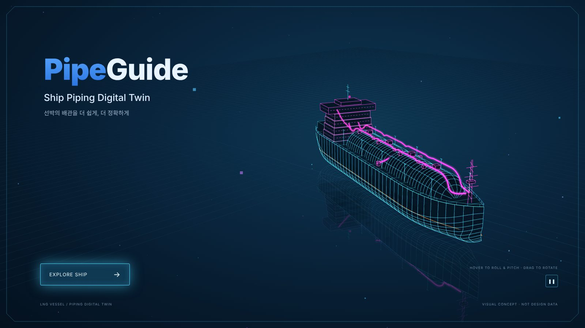</div>
      <div class="layer tag t1" data-depth="0.12">FIG.01 · 인트로 화면 · 와이어프레임 + 글로우</div>
      <div class="layer tag t2" data-depth="0.18">HOVER → ROLL &amp; PITCH</div>
    </div>
  </div>
</header>

<main>
  <div class="wrap">
    <div class="metrics" role="list">
      <div class="metric" role="listitem"><div class="v">20<small>개</small></div><div class="k">P&amp;ID로 자동 생성한 3D 배관</div></div>
      <div class="metric" role="listitem"><div class="v">22<span class="ar">→</span><span class="ok">273</span><small>mm</small></div><div class="k">최소 이격 · 기준 25mm 통과</div></div>
      <div class="metric" role="listitem"><div class="v">22.3<span class="ar">→</span>20.8<small>m</small></div><div class="k">733-443 배관 전체 길이</div></div>
      <div class="metric" role="listitem"><div class="v">10<span class="ar">→</span>8<small>개</small></div><div class="k">엘보(꺾임) 개수</div></div>
    </div>
    <p class="foot">샘플 프로젝트 기준 앱 계산값 · 이격 기준 25mm는 시연 설정값(NORSOK L-002 차용) · 장비 위치는 팀 가정</p>
  </div>

  <!-- 01 overview -->
  <section id="overview">
    <div class="wrap">
      <div class="sh">
        <div class="no"><b>01</b>PROBLEM</div>
        <div>
          <h2 class="q">배관 하나를 굵게 바꾸면, <em>어디까지</em> 다시 봐야 할까?</h2>
          <p>수업에서 P&amp;ID를 보며 3D 배관을 직접 그렸을 때, 배관 한 곳을 잘못 놓자 옆을 지나는 여러 배관과 줄줄이 간섭이 생겼습니다. 한 배관은 두 장의 도면에 걸쳐 있고, 옆에는 다른 계통이 지나갑니다. 이 질문에 프로그램이 답하게 만드는 것이 출발점이었습니다.</p>
        </div>
      </div>
      <div class="needs">
        <div class="need panel glowhover"><span class="mono">NEED 01</span><h3>초안 작성 부담</h3><p>도면의 연결 관계를 읽고 장비 사이 경로를 하나하나 모델링해야 합니다.</p></div>
        <div class="need panel glowhover"><span class="mono">NEED 02</span><h3>의도 반영이 번거로움</h3><p>"위로 돌려라" 한마디에도 메뉴를 뒤지고 다시 그려야 합니다.</p></div>
        <div class="need panel glowhover"><span class="mono">NEED 03</span><h3>변경 영향을 놓치기 쉬움</h3><p>관경 한 단계 변경에 연결 도면 개정과 3D 이격 부족이 따라옵니다.</p></div>
      </div>
    </div>
  </section>

  <!-- 02 flow -->
  <section id="flow">
    <div class="wrap">
      <div class="sh">
        <div class="no"><b>02</b>WORKFLOW</div>
        <div>
          <h2>도면에서 경로 개선까지, 한 흐름으로</h2>
          <p>반복 계산과 검사는 프로그램이, 확인하고 결정하는 일은 설계자가 합니다. 실제 PipeGuide 화면 위에서 커서와 카메라가 기능을 따라가며 시연합니다. 단계를 눌러 원하는 부분부터 볼 수 있습니다.</p>
        </div>
      </div>
      <div class="flow">
        <ol class="steps" role="tablist" aria-label="작업 단계">
          <li><button class="step" role="tab" id="t0" aria-controls="pv" aria-selected="true"><span class="n">01</span><span><b>도면 분석</b><span class="d">OCR로 라인번호·관경 읽기</span></span><span class="bar"><i></i></span></button></li>
          <li><button class="step" role="tab" id="t1" aria-controls="pv" aria-selected="false"><span class="n">02</span><span><b>3D 생성</b><span class="d">A* 길찾기로 배관 20개 배치</span></span><span class="bar"><i></i></span></button></li>
          <li><button class="step" role="tab" id="t2" aria-controls="pv" aria-selected="false"><span class="n">03</span><span><b>변경 영향</b><span class="d">관경 변경 → 굵어짐 · 간섭 감지</span></span><span class="bar"><i></i></span></button></li>
          <li><button class="step" role="tab" id="t3" aria-controls="pv" aria-selected="false"><span class="n">04</span><span><b>경로 개선</b><span class="d">문제 구간 재탐색 · 비교 · 적용</span></span><span class="bar"><i></i></span></button></li>
        </ol>
        <div class="view panel" id="pv" role="tabpanel" aria-labelledby="t0">
          <div class="vp" id="vp">
            <div class="cam" id="cam">
              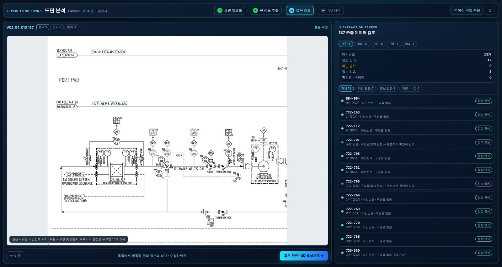
              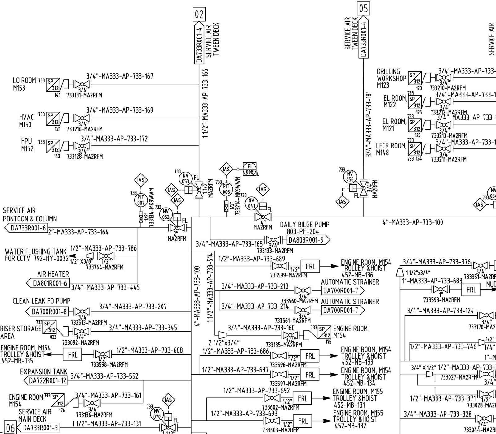
              <div class="ocr" id="ocr"><div class="veil"></div><div class="grid"></div><div class="beam"></div></div>
              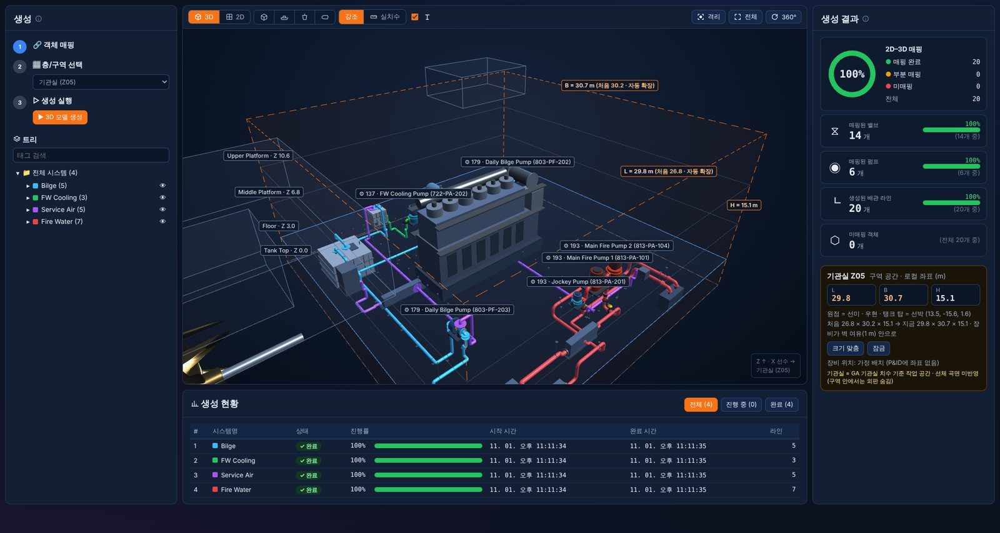
              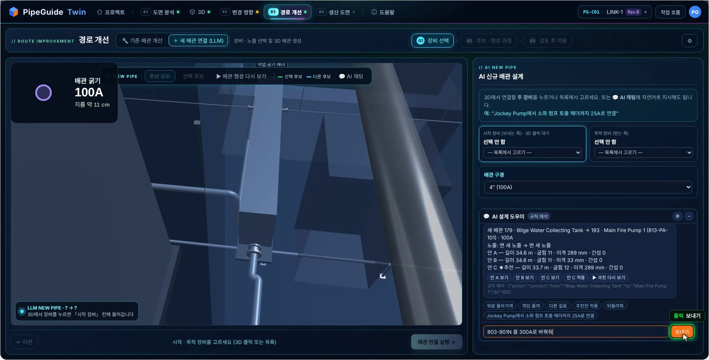
              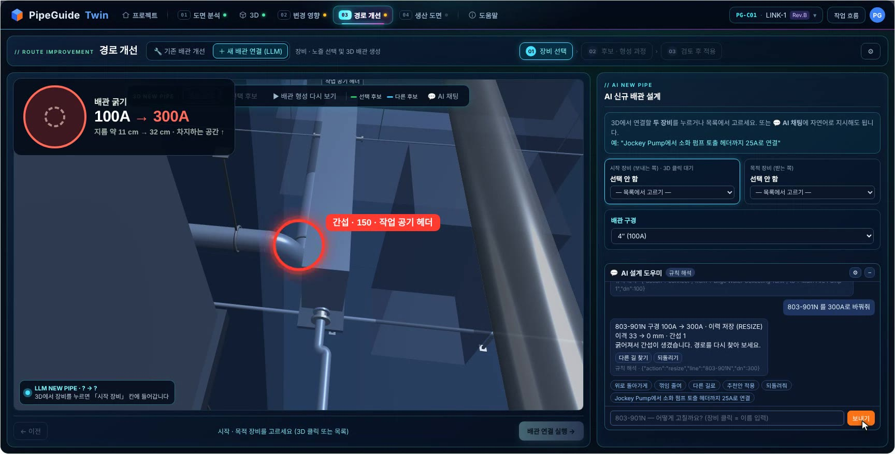
              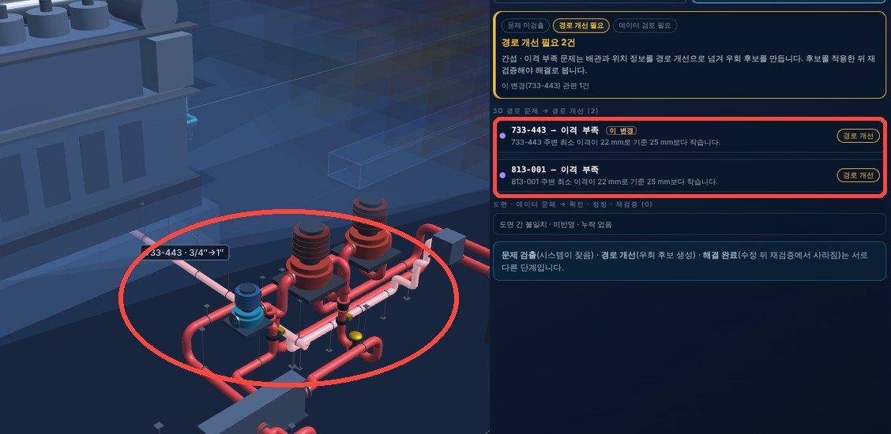
              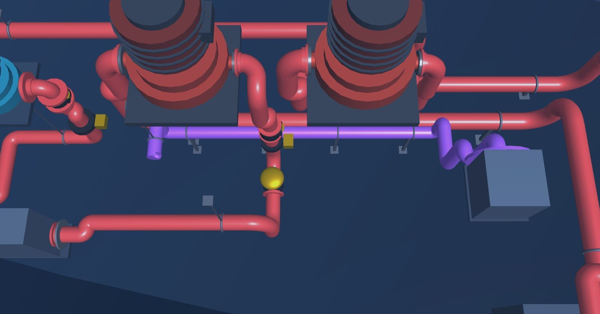
              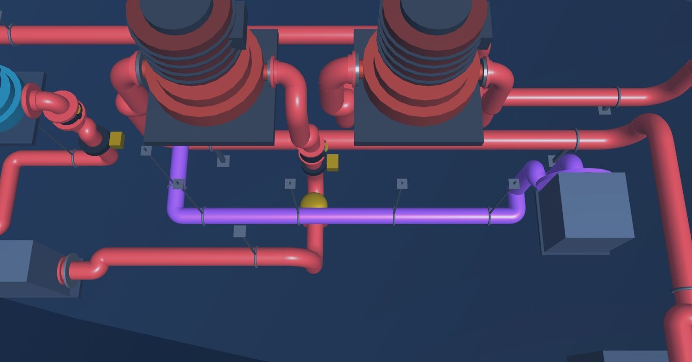
              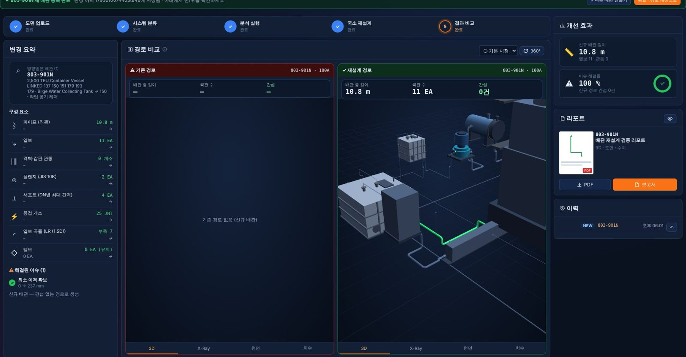
            </div>
            <video class="pv" id="pvv" muted playsinline preload="metadata" aria-hidden="true"></video>
            <div class="ov">
              <div class="vbadge off" id="vbadge"><i></i>LIVE 녹화 · 실제 프로그램 실행</div>
              <div class="spot off" id="spot"><b id="spot-t"></b></div>
              <div class="act off" id="act">⟳ 대안 생성</div>
              <div class="hudc off" id="hudc">
                <span class="hd">OCR · 150번 도면</span>
                <div><i style="border-color:#ff3b30"></i><b id="c-line">0</b><span>라인번호</span></div>
                <div><i style="border-color:#ff9f0a"></i><b id="c-eq">0</b><span>장비 태그</span></div>
                <div><i style="border-color:#2f7bff"></i><b id="c-ref">0</b><span>다른 시트 연결</span></div>
              </div>
              <div class="dec off" id="dec">
                <div class="raw" id="dec-raw"></div>
                <div class="f">
                  <div><small>구경</small><b>3/4″</b><em>20A</em></div>
                  <div><small>배관 등급</small><b>MA333</b><em>재질 · 압력</em></div>
                  <div><small>유체</small><b>AP</b><em>공기</em></div>
                  <div class="k"><small>계통</small><b>733</b><em>작업 공기</em></div>
                  <div><small>번호</small><b>169</b><em>배관 ID</em></div>
                </div>
              </div>
              <div class="cur off" id="cur"><svg viewBox="0 0 26 32" aria-hidden="true"><path d="M2 2 L2 25 L8 19.5 L12 29 L16.5 27 L12.6 18 L21 18 Z" fill="#fff" stroke="#050a14" stroke-width="1.6" stroke-linejoin="round"/></svg><span class="rip"></span></div>
              <div class="rec" id="rec"><i></i><span>DEMO · PipeGuide Twin v10.4 실제 화면</span></div>
              <div class="ctl">
                <button type="button" id="b-prev" aria-label="이전 장면">◀</button>
                <button type="button" id="b-play" aria-label="일시정지">❚❚</button>
                <button type="button" id="b-next" aria-label="다음 장면">▶</button>
              </div>
            </div>
          </div>
          <div class="cap">
            <div>
              <h3 id="pv-h">도면 글자를 읽어 데이터로</h3>
              <p class="k" id="pv-k" aria-live="polite"><em id="pv-n">1/5</em><span id="pv-t"></span></p>
              <div class="dots" id="dots"></div>
            </div>
            <span class="say" id="pv-s">“도면대로 정보를 읽어 줘”</span>
          </div>
        </div>
      </div>
    </div>
  </section>

  <!-- 03 result -->
  <section id="result">
    <div class="wrap">
      <div class="sh">
        <div class="no"><b>03</b>ROUTE RESULT</div>
        <div>
          <h2>733-443 · DN20 → DN25, 눈으로는 같아 보이는 3mm</h2>
          <p>작업 공기 배관을 한 단계 키우자 옆 배관과의 간격이 22mm로 줄었습니다. 기준보다 3mm 부족합니다. 전체 22.3m 중 문제 주변 8.1m만 다시 탐색해, 나머지 경로는 그대로 두고 기준을 통과한 안을 찾았습니다. 슬라이더를 움직여 비교해 보세요.</p>
        </div>
      </div>
      <div class="cmp">
        <div>
          <div class="slider" id="slider">
            
            
            <span class="lb l">변경 직후 · 이격 22mm</span>
            <span class="lb r">안 A 적용 · 273mm</span>
            <div class="bar"></div>
            <label class="sr" for="sl" style="position:absolute;width:1px;height:1px;overflow:hidden;clip:rect(0 0 0 0)">변경 전후 비교 위치</label>
            <input type="range" id="sl" min="0" max="100" value="50">
          </div>
          <p class="foot">PipeGuide 실제 화면 · 같은 시점 · 보라색이 733-443 작업 공기 배관</p>
        </div>
        <div class="panel">
          <div class="tbl-wrap">
            <table>
              <thead><tr><th>항목</th><th>기존 경로</th><th>안 A (추천)</th></tr></thead>
              <tbody>
                <tr><td>최소 이격</td><td class="bad">22 mm</td><td class="good">273 mm</td></tr>
                <tr><td>총 길이</td><td>22.3 m</td><td class="good">20.8 m</td></tr>
                <tr><td>엘보</td><td>10</td><td class="good">8</td></tr>
                <tr><td>용접</td><td>25</td><td class="good">21</td></tr>
                <tr><td>서포트</td><td>12</td><td>12</td></tr>
                <tr><td>간섭</td><td>—</td><td class="good">0</td></tr>
              </tbody>
            </table>
          </div>
          <p class="note">바닥판 관통 1곳은 위치만 표시하고, 통과 여부는 설계자가 검토합니다.</p>
        </div>
      </div>

      <div class="vibe" id="vibe">
        <div class="vibe-head">
          <div>
            <span class="eyebrow">VIBE MACHINE DESIGN · LIVE</span>
            <h3>“Bilge Water Collecting Tank에서 Main Fire Pump 1로 100A 연결해 줘”</h3>
            <p>바이브 코딩이 말을 코드로 바꾸듯, AI 설계 도우미는 설계자의 한 줄을 배관 형상으로 바꿉니다. 아래는 발표 때 시연한 실제 PipeGuide 프로그램입니다. 버튼을 누르면 가상 커서가 직접 타이핑하고, 배관이 만들어지는 과정을 보는 사람의 브라우저에서 그대로 실행합니다.</p>
          </div>
          <div class="lanes">
            <div class="lane"><b>AI</b><span>말 → 연결 명령(JSON). 의도만 구조화</span></div>
            <div class="lane"><b>ALGORITHM</b><span>A* 경로 · 길이 · 이격 · 간섭은 전부 계산값</span></div>
            <div class="lane"><b>DESIGNER</b><span>후보 비교 · 선택 · 승인 (Rev 기록)</span></div>
          </div>
        </div>
        <div class="live" id="liveSlide">
          <div class="lhead"><span class="ltag"><i></i>LIVE · 실제 PipeGuide 프로그램이 이 페이지 안에서 실행됩니다</span><span id="liveStatus">대기 중</span></div>
          <div class="lbox" id="lbox">
            <div id="liveWrap"><iframe id="liveFrame" title="PipeGuide 라이브 데모" tabindex="-1"></iframe></div>
            <div id="liveCover">
              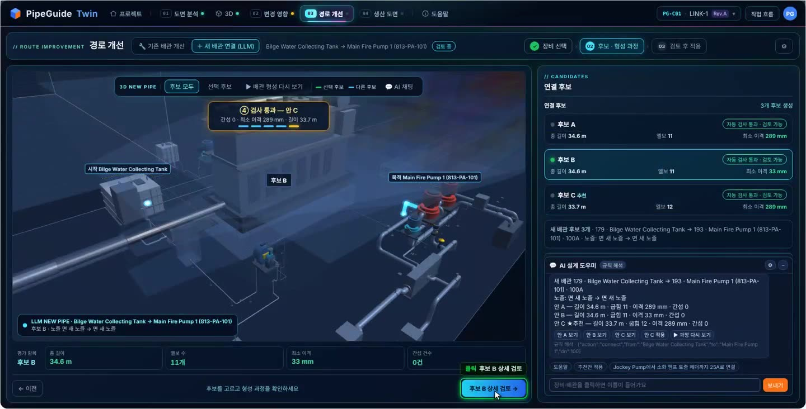
              <div class="lc">
                <b>버튼을 누르면 실제 프로그램이 직접 시연합니다</b>
                <span>도면 → 3D 생성까지 빠르게 준비한 뒤, 가상 커서가 AI 설계 도우미에 타이핑하고 배관을 만듭니다. 처음엔 프로그램(약 9MB)을 내려받느라 10초 정도 걸립니다.</span>
              </div>
            </div>
          </div>
          <div id="liveBar">
            <button type="button" class="pr" data-live="s1"><em>①</em>말로 새 배관 연결<small>타이핑 → 후보 A·B·C → 경로 형성</small></button>
            <button type="button" data-live="s2"><em>②</em>배관 직경 변경<small>100A → 300A · 간섭 감지</small></button>
            <button type="button" data-live="s3"><em>③</em>간섭 문제 해결<small>다른 길 찾기 → 간섭 0</small></button>
            <button type="button" data-live="s4"><em>④</em>생산 도면 반영<small>803-901N-P01 도면</small></button>
            <button type="button" class="rs" data-live="back">↶ 한 단계 전으로</button>
          </div>
          <p class="lnote">①부터 차례로 누르세요. 건너뛰고 누르면 앞 단계를 빠르게 채운 뒤 진행합니다. 데스크톱 브라우저에서 가장 부드럽게 동작합니다.</p>
        </div>
      </div>
    </div>
  </section>

  <!-- 04 UI redesign -->
  <section id="redesign">
    <div class="wrap">
      <div class="sh">
        <div class="no"><b>04</b>UI REDESIGN</div>
        <div>
          <h2>기능별 탭 7개를, 일하는 순서 3단계로</h2>
          <p>초기 버전은 팀원이 만든 기능이 7개 탭에 하나씩 놓여 있어, 처음 쓰는 사람은 어디서 시작해 어디로 가야 하는지 알기 어려웠습니다. 기능을 새로 만들기보다 이미 있는 기능을 설계자의 업무 순서대로 다시 묶는 쪽을 택했고, 그 화면 구조를 제가 설계하고 구현했습니다. 아래 내용은 초기 버전과 최종 버전의 소스코드와 실제 실행 화면을 비교한 것입니다.</p>
        </div>
      </div>

      <div class="rd-metrics" role="list">
        <div class="metric" role="listitem"><div class="v">7<span class="ar">→</span><span class="ok">3</span></div><div class="k">기능별 탭 → 핵심 업무 단계</div></div>
        <div class="metric" role="listitem"><div class="v">2<small>줄</small><span class="ar">→</span><span class="ok">1</span><small>줄</small></div><div class="k">상단 내비게이션</div></div>
        <div class="metric" role="listitem"><div class="v">7<small>개 모듈</small></div><div class="k">코드 주석에 ‘현서’로 표시 · 약 2,300줄</div></div>
        <div class="metric" role="listitem"><div class="v">0<small>줄</small></div><div class="k">계산 엔진 수정 · 기존 엔진을 그대로 연결</div></div>
      </div>
      <p class="foot">초기 버전(FinalProject_ODX)과 최종 버전 소스코드 비교 기준. 계산 엔진 파일(3_engine.js ↔ 04_engine.js)은 두 버전이 동일합니다.</p>

      <!-- 정보 구조 지도 -->
      <div class="ia panel" id="ia">
        <div class="ia-col">
          <div class="ia-h"><span class="tag-b">BEFORE</span>기능 중심 · 탭 7개</div>
          <button type="button" class="ia-it b" data-id="b-project">프로젝트</button>
          <button type="button" class="ia-it b" data-id="b-upload">도면 업로드</button>
          <button type="button" class="ia-it b" data-id="b-analysis">P&amp;ID 분석</button>
          <button type="button" class="ia-it b" data-id="b-gen">3D 생성</button>
          <button type="button" class="ia-it b" data-id="b-inspect">불일치 검사</button>
          <button type="button" class="ia-it b" data-id="b-redesign">국소 재설계</button>
          <button type="button" class="ia-it b" data-id="b-result">결과 비교</button>
        </div>
        <svg class="ia-svg" id="iaSvg" aria-hidden="true"></svg>
        <div class="ia-col">
          <div class="ia-h"><span class="tag-a">AFTER</span>업무 흐름 중심</div>
          <button type="button" class="ia-it a new" data-id="a-intro" data-from="">인트로 <small>NEW · 서비스 첫인상</small></button>
          <button type="button" class="ia-it a new" data-id="a-flow" data-from="">작업 흐름 <small>NEW · 진행 상태 · 이어하기</small></button>
          <button type="button" class="ia-it a" data-id="a-project" data-from="b-project">프로젝트 <small>유지</small></button>
          <button type="button" class="ia-it a key" data-id="a-drawing" data-from="b-upload b-analysis b-gen">01 도면 분석 <small>업로드 · AI 정보 추출 · 결과 검토 · 3D 생성</small></button>
          <button type="button" class="ia-it a" data-id="a-3d" data-from="b-gen">3D <small>모델 둘러보기</small></button>
          <button type="button" class="ia-it a key" data-id="a-impact" data-from="b-inspect">02 변경 영향 <small>설계 변경 · 영향 추적 · 문제 검토</small></button>
          <button type="button" class="ia-it a key" data-id="a-route" data-from="b-redesign b-result">03 경로 개선 <small>후보 생성 · 좌우 3D 비교 · 적용</small></button>
        </div>
      </div>
      <p class="foot">오른쪽 항목에 마우스를 올리면 어떤 기존 탭이 합쳐졌는지 보입니다. 숨긴 기존 화면은 고급 설정에서 열 수 있게 남겨 두었습니다. 이후 다른 팀원이 04 생산 도면 탭을 추가했습니다.</p>

      <!-- 상단 내비 비교 -->
      <div class="navcmp">
        <figure><figcaption><span class="tag-b">BEFORE</span>탭 7개 + 프로젝트 바, 두 줄</figcaption>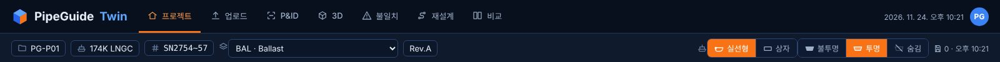</figure>
        <figure><figcaption><span class="tag-a">AFTER</span>작업 순서 탭 한 줄 + 오른쪽 컨텍스트 팝오버</figcaption></figure>
      </div>

      <!-- 화면별 Before / After -->
      <div class="rd-cmp panel">
        <div class="rd-tabs" role="tablist" aria-label="화면 비교">
          <button type="button" role="tab" class="rd-tab" data-k="0" aria-selected="true">첫 화면</button>
          <button type="button" role="tab" class="rd-tab" data-k="1" aria-selected="false">01 도면 분석</button>
          <button type="button" role="tab" class="rd-tab" data-k="2" aria-selected="false">02 변경 영향</button>
          <button type="button" role="tab" class="rd-tab" data-k="3" aria-selected="false">03 경로 개선</button>
        </div>
        <div class="rd-body">
          <div class="rd-pair">
            <figure class="rd-fig fb"><figcaption><span class="tag-b">BEFORE</span><span id="rdBc">초기 버전</span></figcaption><button type="button" class="rd-shot" data-w="b" aria-label="초기 버전 화면 크게 보기">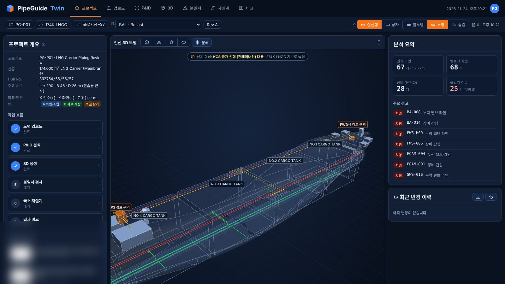<span class="zoom">⤢ 크게 보기</span></button></figure>
            <div class="rd-arrow" aria-hidden="true"><span>→</span></div>
            <figure class="rd-fig fa"><figcaption><span class="tag-a">AFTER</span><span id="rdAc">최종 버전</span></figcaption><button type="button" class="rd-shot" data-w="a" aria-label="최종 버전 화면 크게 보기"><span class="zoom">⤢ 크게 보기</span></button></figure>
          </div>
          <div class="rd-cap">
            <div><span class="file" id="rdF">27_intro.js · 28_workflow.js</span><h3 id="rdH"></h3><p id="rdP"></p></div>
            <ul id="rdL"></ul>
          </div>
        </div>
      </div>

      <!-- 담당 모듈 -->
      <h3 class="rd-sub">코드에 남은 제 이름 · 담당 모듈 7개</h3>
      <div class="mods">
        <div class="mod"><span class="file">27_intro.js</span><b>첫 화면</b><p>360° 회전 와이어프레임 LNG선, 마우스 위치로 횡요·종요. 들어갈 때 WebGL 자원을 해제해 본 화면 3D와 충돌하지 않게 함.</p><span class="ln">268줄</span></div>
        <div class="mod"><span class="file">28_workflow.js</span><b>작업 흐름</b><p>3단계와 세부 작업의 진행 상태를 실제 프로그램 상태(업로드 · 배관 · 변경 이력 · 문제)에서만 계산. “지어낸 수치 없음.”</p><span class="ln">204줄</span></div>
        <div class="mod"><span class="file">29_drawing.js</span><b>01 도면 분석</b><p>업로드 → AI 정보 추출 → 결과 검토 → 3D 생성. 3D를 만든 뒤 자동으로 넘어가지 않고 사람이 확인한 뒤 다음 단계로.</p><span class="ln">417줄</span></div>
        <div class="mod"><span class="file">30_impact.js</span><b>02 변경 영향</b><p>‘영향 범위에 있음’과 ‘실제로 문제가 검출됨’을 나눠 표시. 간섭 · 이격은 경로 개선으로, 데이터 문제는 정정으로 분기.</p><span class="ln">310줄</span></div>
        <div class="mod"><span class="file">31_route.js</span><b>03 경로 개선</b><p>국소 재설계 + 결과 비교를 한 화면으로. 후보 A/B/C, 좌우 3D 카메라 동기화. 자동 검사 결과를 ‘승인 가능’으로 표시하지 않음.</p><span class="ln">520줄</span></div>
        <div class="mod"><span class="file">33_shell.js</span><b>통합 내비게이션</b><p>상단 2줄 → 1줄, 뒤로 · 앞으로 가기와 새로고침 시 화면 · 선택 배관 복원, 화면 전환 시 3D 자원 정리.</p><span class="ln">249줄</span></div>
        <div class="mod"><span class="file">14_piddb.js</span><b>P&amp;ID 연결 판정</b><p>연결을 CONFIRMED · CANDIDATE · UNRESOLVED로 분류. 같은 라인번호만으로는 확정하지 않고 사람이 승인.</p><span class="ln">324줄</span></div>
      </div>

      <div class="scope">
        <div><span class="mono">직접 설계 · 구현</span><p>3단계 업무 흐름, 인트로 · 작업 흐름, 도면 분석 · 변경 영향 · 경로 개선 통합 화면, 좌우 3D 비교와 카메라 동기화, 통합 내비게이션과 작업 복원, P&amp;ID 연결 판정 엔진</p></div>
        <div><span class="mono">기존 팀 엔진을 화면에 연결</span><p>A* 경로 탐색, 배관 3D 모델링, OCR 글자 인식, AI 신규 배관 연결. 알고리즘은 고치지 않고 사용자가 쓰는 흐름 안으로 엮었습니다.</p></div>
        <div><span class="mono">다른 팀원 담당</span><p>04 생산 · 조립 도면 생성, 조장 피드백 반영 모듈(OCR 위치 강조 · AI 채팅 도킹)</p></div>
      </div>
      <p class="foot">실제 사용자를 대상으로 작업 시간이나 만족도를 측정하지는 않았습니다. 같은 작업 시나리오로 클릭 수 · 완료 시간을 비교하는 것이 다음 검증 과제입니다.</p>
    </div>
  </section>
  <div class="rd-lb" id="rdLb" hidden><button type="button" class="x" aria-label="닫기">✕</button><p></p></div>

  <!-- 05 role -->
  <section id="role">
    <div class="wrap">
      <div class="sh">
        <div class="no"><b>05</b>DESIGN PROCESS</div>
        <div>
          <h2>UI/UX 개편 — 레퍼런스 분석과 생성형 AI로 만든 사용자 중심 인터페이스</h2>
          <p>6인 팀(개발 3인) 프로젝트에서 UX 기획, 화면 설계와 구현, 3D 시각화, 기능 통합을 맡았습니다. 디자인 전문 지식이 부족한 상태에서 레퍼런스를 분석하고, 그 결과를 구현 가능한 요구사항으로 바꾸는 데 집중했습니다.</p>
        </div>
      </div>

      <div class="role-intro">
        <div class="role-card panel">
          <span class="eyebrow">ROLE</span>
          <h3 style="margin-top:8px">개발 · 사용자 화면</h3>
          <ul>
            <li>UI/UX 기획과 화면 설계</li>
            <li>선박·기관실 3D 시각화 (three.js)</li>
            <li>팀원별 기능을 하나의 작업 흐름으로 통합</li>
            <li>브라우저 실사용 검증과 사용성 개선</li>
          </ul>
        </div>
        <div class="thesis panel">
          <span class="mono">CORE</span>
          <p>단순히 AI로 디자인을 만든 것이 아니라, 레퍼런스를 분석해 디자인 용어를 익히고 이를 AI가 구현할 수 있는 구체적 명세로 바꿨습니다.</p>
        </div>
      </div>

      <ol class="tl">
        <li>
          <div class="node">01</div>
          <div class="body panel glowhover">
            <h3><small>Problem</small>기능은 있었지만, 흐름과 시각적 완성도가 없었다</h3>
            <p>팀원별로 개발한 기능을 합치면서 탭과 버튼이 복잡해졌고 화면 디자인도 제각각이었습니다. 선박 디지털 트윈이라는 성격을 전달하려면 3D 모델을 띄우는 것을 넘어, 선박 구조와 배관 정보를 직관적으로 읽을 수 있는 화면이 필요했습니다. 목표는 <strong>기능적 사용성과 시각적 완성도를 함께 끌어올리는 것</strong>이었습니다.</p>
          </div>
        </li>
        <li>
          <div class="node">02</div>
          <div class="body panel glowhover">
            <h3><small>Reference</small>하이엔드 인터랙티브 웹 벤치마킹</h3>
            <p>Active Theory와 IPARTNERS NX 같은 하이엔드 인터랙티브 웹사이트에서 디지털 트윈에 어울리는 시각 표현과 인터랙션, 복잡한 정보를 단계별로 묶어 보여 주는 구성을 참고했습니다. 외형을 그대로 따라 하지 않고 Gemini로 각 화면에 쓰인 기법과 용어를 분석했습니다. 덕분에 '미래지향적인 3D 화면'처럼 막연하게 요청하는 대신 요소 단위로 정의할 수 있게 됐습니다.</p>
            <div class="terms">
              <div class="term"><b>와이어프레임 셰이더</b><i>Wireframe Shader</i><p>선체를 면 대신 선으로 그려 구조를 드러냄</p><span class="st ap">인트로 선박에 적용</span></div>
              <div class="term"><b>글로우</b><i>Glow / Rim Light</i><p>배관·버튼이 스스로 발광하는 듯한 빛 번짐</p><span class="st ap">배관 · 버튼에 적용</span></div>
              <div class="term"><b>오버레이 그리드</b><i>Overlay Grid</i><p>배경의 미세한 좌표 그리드로 정밀함을 표현</p><span class="st ap">인트로 · 작업 흐름</span></div>
              <div class="term"><b>글래스모피즘 카드</b><i>Glassmorphism</i><p>반투명 카드로 단계별 정보를 묶음</p><span class="st ap">작업 흐름 카드</span></div>
              <div class="term"><b>글로우 호버</b><i>Micro-interaction</i><p>마우스를 올리면 테두리가 빛나며 반응</p><span class="st ap">버튼 · 카드</span></div>
              <div class="term"><b>롤 &amp; 피치 호버</b><i>Responsive Hover</i><p>커서 위치에 따라 선박이 기울어지는 반응</p><span class="st ap">인트로 선박</span></div>
              <div class="term"><b>클리핑 뷰</b><i>Clipping View</i><p>모델 일부를 잘라 내부를 보여 주는 기법</p><span class="st lr">학습 · 검토</span></div>
              <div class="term"><b>리퀴드 디스플레이스먼트</b><i>Liquid Displacement</i><p>화면이 액체처럼 일렁이는 전환 효과</p><span class="st lr">학습 · 검토</span></div>
            </div>
            <div class="legend"><span><span class="st ap" style="margin:0">적용</span> 최종 프로그램에 구현</span><span><span class="st lr" style="margin:0">학습 · 검토</span> 용어와 원리만 익히고 적용하지 않음</span></div>
          </div>
        </li>
        <li>
          <div class="node">03</div>
          <div class="body panel glowhover">
            <h3><small>Prompt</small>추상적인 디자인 요구를 구체적인 개발 명세로</h3>
            <p>분석으로 익힌 디자인 용어와 실제 기능 요구사항을 결합한 프롬프트를 작성해, Gemini와 Claude Code로 개발하는 과정에서 의도를 정확히 전달했습니다.</p>
            <div class="prompts">
              <div class="pbox vague"><span class="mono">BEFORE · 추상적 요청</span><q>선박 모델을 더 세련되게 보여 줘</q></div>
              <div class="arrow" aria-hidden="true">→</div>
              <div class="pbox spec"><span class="mono">AFTER · 구현 가능한 명세</span>
                <ol>
                  <li>선박 외형은 와이어프레임과 글로우 효과로 강조</li>
                  <li>배경과 바닥 표현을 줄여 선박 모델에 시선 집중</li>
                  <li>정면 · 측면 · 후면 · ISO 뷰를 구분해 형상 이해</li>
                  <li>주요 배관과 장비는 선택 시 시각적으로 강조</li>
                  <li>정보 패널은 3D 모델을 가리지 않는 위치에 배치</li>
                  <li>탭과 버튼을 줄이고 실제 설계 업무 순서대로 구성</li>
                </ol>
              </div>
            </div>
          </div>
        </li>
        <li>
          <div class="node">04</div>
          <div class="body panel glowhover">
            <h3><small>Visual Asset</small>AI 기반 시각 에셋 제작과 반복 조정</h3>
            <p>참고할 선박 이미지와 UI 콘셉트 이미지를 AI에 첨부하고 네온·홀로그램 스타일, 배경 제거, 정면·측면·후면·ISO 뷰 구성 같은 조건을 구체적으로 제시했습니다. 생성 결과의 색상, 배경, 시점, 강조 요소를 반복해서 조정해 시각적 방향을 정했고, 이 이미지를 UI 콘셉트 검토와 AI 개발 도구에 원하는 결과를 전달하는 기준으로 썼습니다.</p>
          </div>
        </li>
        <li>
          <div class="node">05</div>
          <div class="body panel glowhover">
            <h3><small>Implementation</small>디자인과 사용성을 하나의 화면으로</h3>
            <p>기능별로 흩어져 있던 화면을 실제 설계 업무 순서인 <strong>도면 분석 → 3D 확인 → 변경 영향 → 경로 개선</strong>으로 재구성했습니다. 배관을 고르면 관련 정보가 뜨고, 설계 변경 결과가 경로 개선 화면으로 넘어가도록 화면 간 상태 관리를 개선했습니다. 경로 개선에서는 기존 배관과 개선 후보를 좌우 3D 화면으로 나란히 놓고 카메라를 동기화해 같은 시점에서 차이를 보게 했습니다.</p>
            <div class="duo">
              <figure>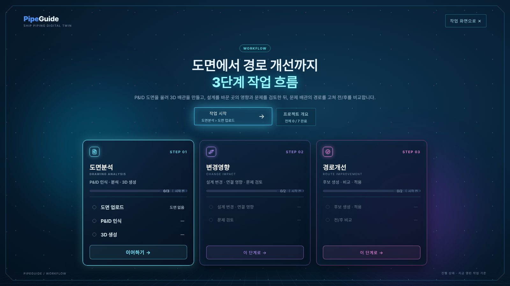<figcaption><b>작업 흐름 화면</b> · 단계별 글래스 카드와 진행 상태</figcaption></figure>
              <figure><figcaption><b>경로 개선 화면</b> · 좌우 3D 비교와 카메라 동기화</figcaption></figure>
            </div>
          </div>
        </li>
        <li>
          <div class="node">06</div>
          <div class="body panel glowhover">
            <h3><small>Verification</small>AI의 결과물을 그대로 쓰지 않고 직접 검증</h3>
            <p>생성된 화면과 코드를 실제 브라우저에서 직접 조작하며 확인했고, 문제가 생기면 원인을 분석해 수정 사항을 다시 전달했습니다. 그 결과 기능을 나열하던 초기 화면이 설계 검토와 경로 개선을 하나의 흐름으로 수행하는 웹 기반 디지털 트윈 인터페이스가 됐습니다.</p>
            <ul class="checks">
              <li>버튼 동작</li><li>화면 전환</li><li>배관 선택</li>
              <li>스크롤 위치 유지</li><li>3D 모델 표시</li><li>카메라 동기화</li>
            </ul>
          </div>
        </li>
      </ol>
    </div>
  </section>

  <!-- 05 learned -->
  <section id="learned">
    <div class="wrap">
      <div class="sh">
        <div class="no"><b>06</b>RETROSPECTIVE</div>
        <div>
          <h2>회고 및 배운 점</h2>
        </div>
      </div>
      <div class="learn">
        <div class="lessons">
          <div class="lesson panel"><span class="mono">01 · 학습 방식</span><p>디자인 전문 지식이 충분하지 않아도 레퍼런스를 체계적으로 분석하고, AI로 전문 용어를 익혀 구체적인 구현 요구사항으로 바꿀 수 있다는 것을 배웠습니다.</p></div>
          <div class="lesson panel"><span class="mono">02 · AI 협업</span><p>생성형 AI를 코드 작성 도구로만 쓰지 않고 디자인 분석, 아이디어 구체화, 시각 에셋 제작, 구현과 검증을 함께하는 협업 도구로 활용했습니다.</p></div>
          <div class="lesson panel"><span class="mono">03 · 사용자 중심</span><p>화려한 시각 효과만으로 좋은 UI가 되지 않습니다. 사용자가 어떤 정보를 먼저 보고 어떤 순서로 일하는지 이해하도록 설계하는 것이 핵심이었습니다.</p></div>
        </div>
        <div class="panel">
          <div class="tbl-wrap">
            <table class="skills">
              <thead><tr><th>경험</th><th>구체적인 행동</th><th>드러나는 역량</th></tr></thead>
              <tbody>
                <tr><td>레퍼런스 분석</td><td>Active Theory · IPARTNERS NX 등 인터랙티브 웹 사례 조사</td><td>벤치마킹 · 디자인 분석</td></tr>
                <tr><td>전문 용어 학습</td><td>Gemini로 시각 효과 · 인터랙션 기법 분석</td><td>자기주도학습 · AI 활용</td></tr>
                <tr><td>프롬프트 구체화</td><td>추상적 요구를 디자인 · 기능 조건으로 변환</td><td>요구사항 정의</td></tr>
                <tr><td>시각 에셋 제작</td><td>이미지 첨부 · 스타일 변환 · 반복 피드백</td><td>AI 기반 디자인 기획</td></tr>
                <tr><td>프론트엔드 구현</td><td>Claude Code로 UI · 화면 전환 · 3D 인터랙션 개선</td><td>프론트엔드 · 시스템 통합</td></tr>
                <tr><td>사용성 검증</td><td>브라우저 조작 후 오류 분석 · 반복 수정</td><td>문제 해결 · 품질 검증</td></tr>
              </tbody>
            </table>
          </div>
        </div>
      </div>

      <div class="quote">
        <span class="mono">ONE-LINE CONTRIBUTION</span>
        <p>하이엔드 인터랙티브 웹사이트를 벤치마킹하고 Gemini로 디자인 전문 용어를 학습한 뒤, 이를 구체적인 AI 개발 프롬프트와 UI 요구사항으로 바꿔 PipeGuide의 시각적 완성도와 사용자 중심 워크플로우를 개선했습니다.</p>
      </div>
    </div>
  </section>

  <section class="contact" id="contact">
    <div class="wrap">
      <div>
        <span class="eyebrow">CONTACT</span>
        <h2 style="margin-top:10px">최현서</h2>
        <p>동의대학교 신소재공학과 졸업 · ODX 한화오션 DX아카데미 7기 조선 설계 직무</p>
      </div>
      <div class="mail">
        <code id="em">chlgustj01@naver.com</code>
        <button type="button" id="cp">COPY</button>
      </div>
    </div>
  </section>
</main>
<footer><div class="wrap"><p class="src" style="margin:0 0 10px">도면: AI Hub 「조선·해양 플랜트 P&amp;ID 심볼 식별 데이터」(CC BY-NC · 비영리 · 출처 표기) · 회사 도면 미사용 · 근거: JIS 배관 규격 · KR 강선규칙 · SOLAS · A* 비용식: 김신형(2014) · 결과는 설계 검토용이며 3D는 기관실 한 구역만 다룹니다.</p>© 2026 Choi Hyunseo · PipeGuide Portfolio</div></footer>

<script>
(function(){
  var reduce = window.matchMedia && matchMedia('(prefers-reduced-motion: reduce)').matches;

  /* 워크플로 튜토리얼 플레이어 — 가상 카메라 + 가상 커서 */
  var SC = [
    {h:'도면 글자를 읽어 데이터로', say:'“도면대로 정보를 읽어 줘”', keys:[
      {img:'ocr',cam:[50,50,1],cur:[53.3,4],click:1,spot:[50.6,2,56.2,6],tag:'02 AI 정보 추출',t:'P&ID 도면 이미지를 올리고 AI 정보 추출을 실행합니다. 글자 인식(OCR)은 설치 없이 브라우저 안에서 돌아갑니다.'},
      {img:'pid',cam:[50,50,1],cur:null,fx:'scan',dur:7200,t:'OCR이 도면을 위에서 아래로 훑으며 글자를 찾습니다. 빨강은 라인번호, 주황은 장비 태그, 파랑은 다른 시트로 이어지는 표시입니다. 박스는 PipeGuide가 이 도면에서 실제로 찾은 위치입니다.'},
      {img:'pid',cam:[24.2,30.5,4.2],cur:null,fx:'decode',dur:8200,spot:[16.6,23.6,31.7,27.1],tone:'red',tag:'라인번호 1줄',t:'한 줄을 확대해 보면 3/4″-MA333-AP-733-169. 이 안에 구경 20A, 배관 등급, 유체(공기), 계통 733 작업 공기, 배관 번호가 모두 들어 있습니다.'},
      {img:'ocr',cam:[84,25,2.3],cur:[96,22],spot:[68,19.5,99,30.5],tag:'15개 중 12개 인식',t:'137번 도면에서 라인번호 15개를 찾아 12개를 정상 인식했습니다.'},
      {img:'ocr',cam:[84,53,2.3],cur:[96.5,53.3],click:1,spot:[68,51,99,56.6],tone:'warn',tag:'정보 없음',t:"못 읽은 구경은 지어내지 않고 '정보 없음'으로 남깁니다. 설계자가 원본과 대조해 직접 입력합니다."},
      {img:'ocr',cam:[62,90,2],cur:[63.5,96],click:1,spot:[55.6,93.4,65.6,98.4],tag:'검토 완료 → 3D 생성',t:'검토를 마치면 확정된 데이터만 3D 생성 단계로 넘깁니다.'}
    ]},
    {h:'읽은 데이터로 3D 배관 20개', say:'“배관 초안을 잡아 줘”', keys:[
      {img:'ws',cam:[12,18,2.4],cur:[6,22.4],click:1,spot:[3,20.3,8.9,24.4],tag:'3D 모델 생성',t:'기관실 구역(Z05)을 고르고 3D 모델 생성을 실행합니다.'},
      {img:'ws',cam:[50,42,1.35],cur:[62,58],spot:[33,28,72,74],tag:'A* 길찾기 · 0.5m 격자',t:'장비 노즐과 노즐 사이를 A* 길찾기로 연결해 배관 20개를 배치합니다. P&ID에는 좌표가 없어 장비 위치는 계통별 팀 가정값입니다.'},
      {img:'ws',cam:[40,38,2.6],cur:[44,36.8],spot:[35.4,35.2,47.6,38],tag:'137 · FW Cooling Pump',t:'도면의 장비 태그가 3D 장비로 이어지고, 배관 색은 계통을 나타냅니다.'},
      {img:'ws',cam:[11,37,2.6],cur:[16.2,40.2],click:1,spot:[1.5,33.5,17.5,43],tag:'계통 4개',t:'Bilge 5 · FW Cooling 3 · Service Air 5 · Fire Water 7. 왼쪽 목록에서 계통별로 보이기와 숨기기를 바꿉니다.'},
      {img:'ws',cam:[88,15,2.5],cur:[90,12],spot:[82,8,99,20],tone:'ok',tag:'매핑 100%',t:'배관 20개 모두 2D→3D 매핑을 마쳤고, 만들지 못한 배관은 0개입니다.'}
    ]},
    {h:'관경 하나의 변경을 3D에서 검사', say:'“803-901N를 300A로 바꿔 줘”', keys:[
      {img:'cb',cam:[50,50,1],cur:[96.2,92.3],click:1,spot:[67.5,88.5,99.5,94.8],tag:'“803-901N를 300A로 바꿔줘”',t:'앞에서 말로 만든 새 배관 803-901N(100A)을 고르고, AI 설계 도우미에 “300A로 바꿔 줘”라고 보냅니다.'},
      {img:'ca',cam:[27,47,2.1],cur:null,flip:['cb','ca'],spot:[21,45.5,41,62],tone:'warn',tag:'100A ⇄ 300A',t:'같은 시점에서 변경 전과 후를 번갈아 보면 배관이 세 배 가까이 굵어지는 것이 바로 보입니다.'},
      {img:'ca',cam:[14,25,2.8],cur:null,spot:[1.5,15.5,27,32.5],tone:'warn',tag:'단면 비교',t:'지름 약 11cm → 32cm. 왼쪽 위 단면 비교에 배관이 차지하는 공간이 얼마나 커졌는지 표시됩니다.'},
      {img:'ca',cam:[40,51,2.5],cur:null,spot:[29.5,45.5,50.5,57],tone:'warn',tag:'간섭 · 150 작업 공기 헤더',t:'굵어진 배관이 옆을 지나는 작업 공기 헤더와 부딪히는 지점을 빨간 원으로 바로 알려 줍니다.'},
      {img:'imp',cam:[77,36,2.1],cur:[70,30],spot:[55.5,27,99.4,45],tone:'warn',tag:'경로 개선 필요 2건',t:'같은 검사로 733-443(¾″→1″)의 이격 부족(22mm < 기준 25mm)도 문제 목록에 올라옵니다. 함께 걸리는 813-001도 찾아냅니다.'},
      {img:'imp',cam:[88,33,2.2],cur:[96.5,31.2],click:1,spot:[93.6,29,99.2,33.2],tag:'경로 개선으로',t:'문제 항목에서 바로 경로 개선 단계로 넘어갑니다.'}
    ]},
    {h:'문제 구간만 다시 찾고, 비교해서 적용', say:'“문제 구간만 고쳐 줘”', keys:[
      {img:'bef',cam:[45,42,2.2],cur:null,spot:[39,33,50,50],tone:'warn',tag:'이격 22mm',t:'변경 직후: 보라색 733-443이 옆 배관과 22mm 간격으로 지나갑니다.'},
      {img:'bef',cam:[50,48,1.25],cur:'act',click:1,act:1,spot:[22,36,79,50],tone:'warn',tag:'재탐색 구간 8.1m',t:'대안 생성을 누르면 전체 22.3m 중 문제 주변 8.1m만 다시 탐색하고, 나머지 경로는 그대로 둡니다.'},
      {img:'aft',cam:[50,50,1.25],cur:null,spot:[22,37,79,64],tone:'ok',tag:'안 A · 이격 273mm · 간섭 0',t:'안 A: 이격 22→273mm, 길이 22.3→20.8m, 엘보 10→8. 기준 25mm를 통과한 후보만 제시합니다.'},
      {img:'cmp',cam:[50,40,1.15],cur:[66,62],spot:[49.4,17,79.8,98.5],tone:'ok',tag:'좌우 3D 비교 · 카메라 동기화',t:'기존 경로와 후보를 좌우 3D 화면에 나란히 놓고 같은 시점에서 비교합니다. (화면은 새 배관 803-901N 예시)'},
      {img:'cmp',cam:[88,30,2.2],cur:[94.5,51.8],click:1,spot:[81,9.5,99.4,29],tone:'ok',tag:'이슈 해결 100%',t:'적용하면 변경 리포트와 이력(Rev)이 남고, 언제든 되돌릴 수 있습니다.'}
    ]}
  ];
  var BX=[[17.19,16.53,13.96,4.35,'line'],[17.15,24.34,14,2.01,'line hero'],[17.01,30.89,13.04,4.18,'line'],[76.8,50.16,12.85,2.07,'line'],[1.9,51.47,7.6,2.01,'ref'],[9.4,52.44,12.85,1.95,'line'],[42.3,52.1,17.36,3.1,'line'],[13.6,56.15,14.3,2.81,'line'],[43.8,58.6,14,2.01,'line'],[68.6,62.31,6.95,2.01,'eq'],[44.4,64.93,16,2.6,'line'],[19.7,69.6,14.2,2.01,'line'],[64.9,70.46,7.55,2.01,'ref'],[81.75,70.57,14.15,1.95,'line'],[45.65,74.51,14.05,1.95,'line'],[21.65,74.45,14.35,2.01,'line'],[40.55,79.87,14,2.01,'line'],[23.15,79.7,14,2.01,'line'],[13.95,85.62,14.2,2.01,'line'],[13.29,90.07,15.15,2.6,'line'],[42.25,94.29,14,1.95,'line'],[14.25,96.57,14.45,2.01,'line']];
  var ocr=document.getElementById('ocr');
  BX.forEach(function(b){ var e=document.createElement('i'); e.className='bx '+b[4]; e.style.cssText='left:'+b[0]+'%;top:'+b[1]+'%;width:'+b[2]+'%;height:'+b[3]+'%;--d:'+(0.3+b[1]/100*2.4).toFixed(2)+'s'; ocr.appendChild(e); });
  var $=function(id){return document.getElementById(id);};
  var hudc=$('hudc'), dec=$('dec'), decRaw=$('dec-raw'), fxT=[], pvv=$('pvv'), vbadge=$('vbadge'), vKey=null;
  function fxClear(){ fxT.forEach(clearTimeout); fxT=[]; }
  function fx(key){
    fxClear();
    var f=key.fx||'';
    ocr.classList.toggle('on', key.img==='pid');
    hudc.classList.toggle('off', !f);
    dec.classList.toggle('off', f!=='decode');
    ocr.classList.toggle('focus', f==='decode');
    if(f==='scan'){
      ocr.classList.remove('run','done'); void ocr.offsetWidth;
      var cnt={line:0,eq:0,ref:0}; ['line','eq','ref'].forEach(function(k){ $('c-'+k).textContent='0'; });
      if(reduce){ ocr.classList.add('done'); $('c-line').textContent='19'; $('c-eq').textContent='1'; $('c-ref').textContent='2'; return; }
      ocr.classList.add('run');
      BX.forEach(function(b){ var k=b[4].split(' ')[0];
        fxT.push(setTimeout(function(){ cnt[k]++; var el=$('c-'+k); el.textContent=cnt[k]; var p=el.parentNode; p.classList.remove('bump'); void p.offsetWidth; p.classList.add('bump'); }, (0.45+b[1]/100*2.4)*1000));
      });
    } else if(key.img==='pid'){
      ocr.classList.remove('run'); ocr.classList.add('done');
      $('c-line').textContent='19'; $('c-eq').textContent='1'; $('c-ref').textContent='2';
    }
    if(f==='decode'){
      var txt='3/4″-MA333-AP-733-169', chips=dec.querySelectorAll('.f div');
      [].forEach.call(chips,function(c){ c.classList.remove('in'); });
      if(reduce){ decRaw.textContent=txt; [].forEach.call(chips,function(c){ c.classList.add('in'); }); return; }
      decRaw.innerHTML='<span class="c"></span>';
      for(var i=1;i<=txt.length;i++)(function(i){ fxT.push(setTimeout(function(){ decRaw.innerHTML=txt.slice(0,i)+'<span class="c"></span>'; }, 1300+i*55)); })(i);
      [].forEach.call(chips,function(c,i){ fxT.push(setTimeout(function(){ c.classList.add('in'); }, 2700+i*260)); });
    }
  }
  var vp=$('vp'), cam=$('cam'), spot=$('spot'), spotT=$('spot-t'), cur=$('cur'), act=$('act'), rec=$('rec'),
      pv=$('pv'), H3=$('pv-h'), KT=$('pv-t'), KN=$('pv-n'), SAY=$('pv-s'), dots=$('dots'), bPlay=$('b-play');
  var imgs={}; [].forEach.call(cam.querySelectorAll('img'),function(im){ imgs[im.dataset.k]=im; });
  var tabs=[].slice.call(document.querySelectorAll('.step'));
  var flipT=null, si=0, ki=0, timer=null, clickT=null, playing=!reduce, inView=false, curImg='ocr';

  function layout(k, instant){
    var im=imgs[k.img], a=(im.naturalWidth||+im.getAttribute('width'))/(im.naturalHeight||+im.getAttribute('height'));
    var Vw=vp.clientWidth, Vh=vp.clientHeight, Cw=Vw, Ch=Vw/a;
    if(Ch>Vh){ Ch=Vh; Cw=Vh*a; }
    var z=k.cam[2], tx=Vw/2-z*k.cam[0]/100*Cw, ty=Vh/2-z*k.cam[1]/100*Ch;
    tx = z*Cw>=Vw ? Math.min(0,Math.max(Vw-z*Cw,tx)) : (Vw-z*Cw)/2;
    ty = z*Ch>=Vh ? Math.min(0,Math.max(Vh-z*Ch,ty)) : (Vh-z*Ch)/2;
    var els=[cam,spot,cur];
    if(instant) els.forEach(function(e){ e.style.transition='none'; });
    cam.style.width=Cw+'px'; cam.style.height=Ch+'px';
    cam.style.transform='translate('+tx+'px,'+ty+'px) scale('+z+')'; cam.style.setProperty('--iz', (1/z).toFixed(3));
    function P(x,y){ return [tx+z*x/100*Cw, ty+z*y/100*Ch]; }
    if(k.spot){
      var p1=P(k.spot[0],k.spot[1]), p2=P(k.spot[2],k.spot[3]);
      p1[0]=Math.max(3,p1[0]); p1[1]=Math.max(3,p1[1]); p2[0]=Math.min(Vw-3,p2[0]); p2[1]=Math.min(Vh-3,p2[1]);
      spot.style.left=p1[0]+'px'; spot.style.top=p1[1]+'px';
      spot.style.width=(p2[0]-p1[0])+'px'; spot.style.height=(p2[1]-p1[1])+'px';
      spot.className='spot'+(k.tone?' '+k.tone:'')+(p1[1]<30?' below':'')+(p1[0]>Vw*.55?' right':'');
      spotT.textContent=k.tag||'';
    } else spot.className='spot off';
    act.classList.toggle('off',!k.act); act.classList.remove('hit');
    if(k.cur==='act'){
      var r=act.getBoundingClientRect(), v=vp.getBoundingClientRect();
      cur.style.left=(r.left-v.left+r.width*.5)+'px'; cur.style.top=(r.top-v.top+r.height*.55)+'px'; cur.classList.remove('off');
    } else if(k.cur){
      var c=P(k.cur[0],k.cur[1]); cur.style.left=c[0]+'px'; cur.style.top=c[1]+'px'; cur.classList.remove('off');
    } else cur.classList.add('off');
    if(instant){ void cam.offsetWidth; els.forEach(function(e){ e.style.transition=''; }); }
  }

  function show(s, k, instant){
    clearTimeout(timer); clearTimeout(clickT); clearInterval(flipT); cur.classList.remove('click'); vKey=null; pvv.onended=null;
    var sc=SC[s], key=sc.keys[k], sceneChanged = s!==si || instant;
    si=s; ki=k;
    function swap(k2){ if(k2!==curImg){ imgs[curImg].classList.remove('on'); imgs[k2].classList.add('on'); curImg=k2; } }
    if(key.vid){ return showVid(sc,key,s,k); }
    pvv.classList.remove('on'); vbadge.classList.add('off'); try{ pvv.pause(); }catch(e){}
    if(key.flip && !reduce && !instant){
      var n=0; swap(key.flip[0]);
      flipT=setInterval(function(){ n++; swap(key.flip[n%2]); if(n>=7){ clearInterval(flipT); swap(key.img); } }, 650);
    } else swap(key.img);
    tabs.forEach(function(t,i){
      t.setAttribute('aria-selected', i===s?'true':'false'); t.tabIndex = i===s?0:-1;
      var b=t.querySelector('.bar i'); if(i!==s){ b.style.transition='none'; b.style.width='0'; }
    });
    pv.setAttribute('aria-labelledby','t'+s);
    H3.textContent=sc.h; SAY.textContent=sc.say; KT.textContent=key.t; KN.textContent=(k+1)+'/'+sc.keys.length;
    if(sceneChanged || dots.children.length!==sc.keys.length){ dots.innerHTML=''; sc.keys.forEach(function(){ dots.appendChild(document.createElement('i')); }); }
    [].forEach.call(dots.children,function(d,i){ d.classList.toggle('on',i<=k); });
    layout(key, !!instant); fx(key);
    var dur = key.dur || Math.max(3600, 2200 + key.t.length*28);
    if(key.click && !reduce){ clickT=setTimeout(function(){ cur.classList.add('click'); if(key.act) act.classList.add('hit'); }, instant?200:1250); }
    var bar=tabs[s].querySelector('.bar i');
    bar.style.transition='none'; bar.style.width=(k/sc.keys.length*100)+'%'; void bar.offsetWidth;
    if(playing && inView){
      bar.style.transition='width '+dur+'ms linear'; bar.style.width=((k+1)/sc.keys.length*100)+'%';
      timer=setTimeout(next, dur);
    }
  }
  function cueText(key,t){ var c=key.cues[0][1]; key.cues.forEach(function(q){ if(t>=q[0]) c=q[1]; }); return c; }
  function showVid(sc,key,s,k){
    tabs.forEach(function(t,i){ t.setAttribute('aria-selected', i===s?'true':'false'); t.tabIndex = i===s?0:-1; var b=t.querySelector('.bar i'); if(i!==s){ b.style.transition='none'; b.style.width='0'; } });
    pv.setAttribute('aria-labelledby','t'+s);
    H3.textContent=sc.h; SAY.textContent=sc.say; KN.textContent=(k+1)+'/'+sc.keys.length; KT.textContent=key.cues[0][1];
    if(dots.children.length!==sc.keys.length){ dots.innerHTML=''; sc.keys.forEach(function(){ dots.appendChild(document.createElement('i')); }); }
    [].forEach.call(dots.children,function(d,i){ d.classList.toggle('on',i<=k); });
    spot.className='spot off'; cur.classList.add('off'); act.classList.add('off'); fx({});
    vKey=key; pvv.classList.add('on'); vbadge.classList.remove('off');
    if(pvv.getAttribute('src')!==key.vid){ pvv.setAttribute('poster',key.poster); pvv.setAttribute('src',key.vid); }
    try{ pvv.currentTime=0; }catch(e){}
    var bar=tabs[s].querySelector('.bar i'), n=sc.keys.length;
    bar.style.transition='none'; bar.style.width=(k/n*100)+'%';
    pvv.ontimeupdate=function(){ if(vKey!==key) return; KT.textContent=cueText(key,pvv.currentTime); if(pvv.duration) bar.style.width=((k+pvv.currentTime/pvv.duration)/n*100)+'%'; };
    pvv.onended=function(){ if(vKey===key && playing) next(); };
    if(playing && inView){ var pr=pvv.play(); if(pr&&pr.catch) pr.catch(function(){}); } else { try{ pvv.pause(); }catch(e){} }
  }
  function next(){ var sc=SC[si]; if(ki+1<sc.keys.length) show(si,ki+1); else show((si+1)%SC.length,0); }
  function prev(){ if(ki>0) show(si,ki-1); else { var s=(si+SC.length-1)%SC.length; show(s,SC[s].keys.length-1); } }
  function setPlay(p){ playing=p; if(!p){ try{pvv.pause();}catch(e){} } bPlay.textContent=p?'❚❚':'▶︎'; bPlay.setAttribute('aria-label',p?'일시정지':'재생'); rec.classList.toggle('paused',!p); show(si,ki); }

  tabs.forEach(function(t,i){
    t.addEventListener('click', function(){ show(i,0); });
    t.addEventListener('keydown', function(e){
      if(e.key==='ArrowDown'||e.key==='ArrowRight'){ e.preventDefault(); show((i+1)%tabs.length,0); tabs[si].focus(); }
      if(e.key==='ArrowUp'||e.key==='ArrowLeft'){ e.preventDefault(); show((i+tabs.length-1)%tabs.length,0); tabs[si].focus(); }
    });
  });
  $('b-next').addEventListener('click', next);
  $('b-prev').addEventListener('click', prev);
  bPlay.addEventListener('click', function(){ setPlay(!playing); });
  var rT; addEventListener('resize', function(){ clearTimeout(rT); rT=setTimeout(function(){ var kk=SC[si].keys[ki]; if(!kk.vid) layout(kk, true); },120); });
  if('IntersectionObserver' in window){
    new IntersectionObserver(function(es){ es.forEach(function(e){ var was=inView; inView=e.isIntersecting; if(inView!==was) show(si,ki); }); },{threshold:.35}).observe(vp);
  } else inView=true;
  rec.classList.toggle('paused',!playing); if(!playing){ bPlay.textContent='▶︎'; bPlay.setAttribute('aria-label','재생'); }
  Object.keys(imgs).forEach(function(k){ if(!imgs[k].complete) imgs[k].addEventListener('load',function(){ if(k===curImg && !SC[si].keys[ki].vid) layout(SC[si].keys[ki],true); }); });
  show(0,0,true);

  /* 라이브 데모: 발표 13장 매크로를 그대로 사용 (실제 프로그램을 iframe에서 실행) */
  (function(){
    var box=$('lbox'), wrap=$('liveWrap'), VW=1600, VH=860;
    function fit(){ var w=box.getBoundingClientRect().width; if(!(w>0)) return; wrap.style.transform='scale('+(w/VW)+')'; }
    fit(); addEventListener('resize', fit);
    if('ResizeObserver' in window) new ResizeObserver(fit).observe(box);
    setTimeout(fit,300); setTimeout(fit,1500);
    /* 데모가 도는 동안 프로그램 쪽 포커스·스크롤 때문에 페이지가 저절로 움직이지 않게 고정 (사용자가 직접 스크롤하면 그대로 둠) */
    var userT=0, lastY=scrollY;
    ['wheel','touchmove','keydown','mousedown','pointerdown'].forEach(function(e){ addEventListener(e,function(){ userT=Date.now(); },{passive:true,capture:true}); });
    addEventListener('scroll',function(){
      var busy=window.__liveDemo&&window.__liveDemo.busy;
      if(busy && Date.now()-userT>900 && Math.abs(scrollY-lastY)>2){ scrollTo(0,lastY); return; }
      lastY=scrollY;
    },{passive:true});
  })();

(function(){
  /* 13페이지 라이브 데모 매크로 · ① LLM 배관 생성 → ② 배관 직경 변경 → ③ 간섭 문제 해결 → ④ 생산 도면 반영(803-901N-P01) · ↶ 이전 작업으로 */
  const slide=document.getElementById('liveSlide'); if(!slide) return;
  const fr=document.getElementById('liveFrame'), cover=document.getElementById('liveCover'), st=document.getElementById('liveStatus'), bar=document.getElementById('liveBar');
  let loaded=false, busy=false, fresh=false;
  let stage=0;        // 마지막으로 끝난 단계 (0 = 아직 없음, 1~3)
  let dirty=false;    // 매크로가 중간에 멈춰서 화면이 어중간한 상태
  let fast=false;     // 되돌리기용 빠른 재생
  let newLine=null;   // ①에서 새로 등록된 배관 {id, tag}
  let prepped=false;  // 도면 → 3D 생성까지 끝난 상태
  const say=(t,c)=>{st.textContent=t;st.className=c||'';};
  const sleep=ms=>new Promise(r=>setTimeout(r,fast?Math.max(250,ms*0.4):ms));
  const nap=ms=>new Promise(r=>setTimeout(r,ms));
  function unscroll(){const e=document.getElementById('liveWrap');if(e){e.scrollTop=0;e.scrollLeft=0;}}
  let APP=null;async function appHTML(){if(APP)return APP;say('프로그램 내려받는 중… (약 9MB, 처음 한 번만)','busy');const r=await fetch('live/pgapp.html');if(!r.ok)throw new Error('프로그램 파일을 못 불러옴');APP=await r.text();return APP;}
  let loading=null;
  // 프로그램이 저장해 둔 이전 작업을 지워서 항상 처음 상태로 열리게 함
  function wipe(){try{['pipeguide.twin.bil1','pipeguide.drawing.v1','pg.shell.v1'].forEach(k=>{localStorage.removeItem(k);sessionStorage.removeItem(k);});Object.keys(localStorage).filter(k=>/^pipeguide\./.test(k)).forEach(k=>localStorage.removeItem(k));}catch(e){}}
  async function load(){
    if(loading) await loading;
    loading=(async()=>{const html=await appHTML();await new Promise(res=>{say('프로그램 여는 중…','busy');loaded=false;wipe();fr.onload=()=>{loaded=true;fresh=true;stage=0;dirty=false;newLine=null;prepped=false;mark();say('프로그램 열림','ok');res();};fr.srcdoc=html;});})();
    try{await loading;}finally{loading=null;}
  }
  const D=()=>fr.contentDocument, W=()=>fr.contentWindow;
  const ev=code=>W().eval(code);   // 프로그램 안쪽(App · View3D)에 직접 접근
  const vis=e=>e&&e.offsetParent!==null;
  const norm=s=>(s||'').replace(/\s+/g,' ').trim();
  function find(test,sel){const c=[...D().querySelectorAll(sel||'button')].filter(e=>vis(e)&&test(norm(e.textContent)));c.sort((a,b)=>norm(a.textContent).length-norm(b.textContent).length);return c[0];}
  function findAll(test,sel){return [...D().querySelectorAll(sel||'button')].filter(e=>vis(e)&&test(norm(e.textContent)));}
  async function waitFor(fn,ms){const t0=Date.now();while(Date.now()-t0<(ms||20000)){try{const r=fn();if(r)return r;}catch(e){}await nap(250);}return null;}
  async function click(test,opt){opt=opt||{};const el=await waitFor(()=>find(test,opt.sel),opt.ms||20000);if(!el){if(opt.soft)return false;throw new Error('못 찾음: '+(opt.name||''));}await aim(el,opt.name||norm(el.textContent).slice(0,24));tap();el.click();unscroll();await sleep(opt.wait||900);return true;}

  /* ── 클릭 표시 효과: 가상 커서가 누를 곳으로 이동 → 초록 테두리 + 이름표 → 클릭 물결 (되돌리기 빠른 재생 때는 생략) ── */
  const FXCSS='#pgfx{position:fixed;inset:0;pointer-events:none;z-index:2147483647}'
   +'#pgfx .cur{position:absolute;left:0;top:0;width:24px;height:24px;opacity:0;transition:transform .5s cubic-bezier(.4,0,.2,1),opacity .3s;filter:drop-shadow(0 2px 4px rgba(0,0,0,.55))}'
   +'#pgfx .cur svg{display:block;transform-origin:2px 2px;transition:transform .12s}'
   +'#pgfx .cur.press svg{transform:scale(.82)}'
   +'#pgfx .ring{position:absolute;border:2px solid #0CDD43;border-radius:10px;box-shadow:0 0 0 4px rgba(12,221,67,.16),0 0 16px rgba(12,221,67,.3);opacity:0;transition:opacity .2s}'
   +'#pgfx .ring.round{border-radius:50%}'
   +'#pgfx .tip{position:absolute;background:rgba(4,20,10,.92);color:#E3EFE6;border:1px solid #1F5A30;font:600 13px/1 "Pretendard","Noto Sans KR",sans-serif;padding:7px 10px;border-radius:8px;white-space:nowrap;opacity:0;transition:opacity .2s}'
   +'#pgfx .tip b{color:#0CDD43;margin-right:6px;font-weight:800}'
   +'#pgfx .rip{position:absolute;width:14px;height:14px;margin:-7px 0 0 -7px;border-radius:50%;border:2px solid #0CDD43;animation:pgrip .55s ease-out forwards}'
   +'@keyframes pgrip{from{transform:scale(1);opacity:.9}to{transform:scale(4);opacity:0}}';
  const CURSVG='<svg width="24" height="24" viewBox="0 0 24 24"><path d="M2 2 L2 19 L6.6 14.8 L9.6 21.6 L12.6 20.3 L9.7 13.6 L16 13.6 Z" fill="#fff" stroke="#04140A" stroke-width="1.4" stroke-linejoin="round"/></svg>';
  let fxPos=null;
  function fxRoot(){
    const d=D(); if(!d||!d.body) return null;
    let r=d.getElementById('pgfx');
    if(!r){const st=d.createElement('style');st.textContent=FXCSS;d.head.appendChild(st);
      r=d.createElement('div');r.id='pgfx';r.innerHTML='<div class="ring"></div><div class="tip"></div><div class="cur">'+CURSVG+'</div>';d.body.appendChild(r);fxPos=null;}
    return r;
  }
  // (x,y) 지점으로 커서 이동 + box 영역 테두리 + 이름표
  async function aimAt(x,y,box,verb,label,round){
    if(fast) return false;
    const r=fxRoot(); if(!r) return false;
    const W=D().documentElement.clientWidth, cur=r.querySelector('.cur'), ring=r.querySelector('.ring'), tip=r.querySelector('.tip');
    if(!fxPos){cur.style.transition='none';const H=D().documentElement.clientHeight;cur.style.transform=`translate(${W/2}px,${H/2}px)`;void cur.offsetWidth;cur.style.transition='';}
    cur.style.opacity='1';
    cur.style.transform=`translate(${x}px,${y}px)`; fxPos=[x,y];
    ring.classList.toggle('round',!!round);
    Object.assign(ring.style,{left:box.l+'px',top:box.t+'px',width:box.w+'px',height:box.h+'px'});
    tip.innerHTML='<b>'+verb+'</b>'+String(label||'').replace(/[<&]/g,c=>c==='<'?'&lt;':'&amp;');
    const tw=tip.offsetWidth;
    tip.style.left=Math.max(8,Math.min(W-tw-8,box.l))+'px';
    tip.style.top=(box.t>40?box.t-34:box.t+box.h+8)+'px';
    await nap(380);
    ring.style.opacity='1'; tip.style.opacity='1';
    await nap(520);
    return true;
  }
  async function aim(el,label,verb){
    if(fast||!el) return false;
    const b=el.getBoundingClientRect(); if(!b.width) return false;
    return aimAt(b.left+Math.min(b.width*0.5,b.width-6),b.top+b.height*0.6,{l:b.left-4,t:b.top-4,w:b.width+8,h:b.height+8},verb||'클릭',label);
  }
  // 클릭 순간: 커서 눌림 + 물결, 잠시 뒤 테두리·이름표 사라짐
  function tap(){
    if(fast) return; const r=fxRoot(); if(!r||!fxPos) return;
    const cur=r.querySelector('.cur'), rp=D().createElement('div');
    rp.className='rip'; rp.style.left=fxPos[0]+'px'; rp.style.top=fxPos[1]+'px'; r.appendChild(rp); setTimeout(()=>rp.remove(),600);
    cur.classList.add('press'); setTimeout(()=>cur.classList.remove('press'),140);
    setTimeout(()=>{r.querySelector('.ring').style.opacity='0';r.querySelector('.tip').style.opacity='0';},450);
  }
  function fxHide(){try{const r=D()&&D().getElementById('pgfx');if(r){r.querySelector('.cur').style.opacity='0';r.querySelector('.ring').style.opacity='0';r.querySelector('.tip').style.opacity='0';}}catch(e){}}
  // 3D 화면에서 장비/배관이 보이는 화면 좌표 (못 구하면 null)
  function screenOf(kind,id){
    try{return ev(`(()=>{const T=THREE,V=View3D,cam=V.camera,cv=V.renderer.domElement;const ms=[];V.scene.traverseVisible(o=>{const u=o.userData||{};if(o.isMesh&&(${kind==='eq'?'u.eq':'u.lineId'})===${JSON.stringify(id)})ms.push(o);});if(!ms.length)return null;
      let p;${kind==='eq'?'const bx=new T.Box3();ms.forEach(m=>bx.expandByObject(m));p=bx.getCenter(new T.Vector3());'
      :'ms.sort((a,b)=>(b.geometry.attributes.position||{count:0}).count-(a.geometry.attributes.position||{count:0}).count);const m=ms[0],pa=m.geometry.attributes.position;if(!pa)return null;p=new T.Vector3().fromBufferAttribute(pa,Math.floor(pa.count/2)).applyMatrix4(m.matrixWorld);'}
      const c=p.project(cam);if(c.z>1||Math.abs(c.x)>1||Math.abs(c.y)>1)return null;const r=cv.getBoundingClientRect();return [r.left+(c.x+1)/2*r.width,r.top+(1-c.y)/2*r.height];})()`);}catch(e){return null;}
  }
  async function aim3D(kind,id,label){
    if(fast) return false; const p=screenOf(kind,id); if(!p) return false;
    return aimAt(p[0],p[1],{l:p[0]-24,t:p[1]-24,w:48,h:48},'3D 선택',label,true);
  }
  const has=t=>s=>s.includes(t), eq=t=>s=>s===t;

  /* ── 채팅창 도우미 ── */
  const chatIn=()=>[...D().querySelectorAll('#aicIn')].find(vis);
  async function chatFocus(){const i=await waitFor(chatIn,15000);if(!i)throw new Error('AI 채팅창 없음');await aim(i,'AI 설계 도우미 입력창');tap();i.click();i.focus({preventScroll:true});await sleep(500);return i;}
  async function typeIn(text){
    const i=chatIn(); if(!i) throw new Error('AI 채팅창 없음');
    i.focus({preventScroll:true});
    if(fast){i.value+=text;i.dispatchEvent(new Event('input',{bubbles:true}));}
    else for(const ch of text){i.value+=ch;i.dispatchEvent(new Event('input',{bubbles:true}));await nap(70);}
    i.setSelectionRange(i.value.length,i.value.length); await sleep(400);
  }
  // 3D에서 장비를 누른 것과 똑같이 처리 (선택 + 채팅창에 이름 입력)
  async function pickEquip(name){
    const before=(chatIn()||{}).value||'';
    try{const eid=ev(`(EQUIP.find(q=>q.n.replace(/^\\s*\\d{3}\\s*·\\s*/,'').startsWith(${JSON.stringify(name)}))||{}).id`);if(eid&&await aim3D('eq',eid,name))tap();}catch(e){}
    try{ev(`(()=>{const e=EQUIP.find(q=>q.n.replace(/^\\s*\\d{3}\\s*·\\s*/,'').startsWith(${JSON.stringify(name)}));if(e)View3D.onPick({shipKey:'eq:'+e.id});})()`);}catch(e){}
    await sleep(900);
    const i=chatIn(); if(i && i.value===before) await typeIn((before&&!/\s$/.test(before)?' ':'')+name+' ');   // 클릭이 안 먹으면 이름을 직접 입력
  }
  async function pickLine(tag,id){
    const before=(chatIn()||{}).value||'';
    if(await aim3D('line',id,tag))tap();
    try{ev(`View3D.onPick({lineId:${JSON.stringify(id)}})`);}catch(e){}
    await sleep(900);
    const i=chatIn(); if(i && i.value===before) await typeIn(tag+' ');
  }
  async function sendChat(){const b=await waitFor(()=>findAll(eq('보내기'),'#aic button').pop(),5000);if(!b)throw new Error('보내기 버튼 없음');await aim(b,'보내기');tap();b.click();unscroll();await sleep(1000);}
  const lastChatBtn=t=>findAll(t,'#aic button').pop();
  const lineIds=()=>{try{return ev('App.lines.map(l=>l.id+"|"+l.tag)');}catch(e){return [];}};

  /* ── 공통 준비 1: EXPLORE SHIP → 작업 시작 → 샘플 → AI 추출 → 3D 생성 (6페이지에서 이미 보여준 부분이라 최대한 빠르게 · 클릭 효과 없음) ── */
  const enabled=e=>e&&!e.disabled&&!e.hasAttribute('disabled');
  // 누르고 → 다음 화면(next)이 뜰 때까지 짧게 기다림. 안 넘어가면 다시 누름 (고정 대기 없이 화면이 바뀌는 대로 바로 진행)
  async function tclick(test,next,opt){
    opt=opt||{};
    const el=await waitFor(()=>{const e=find(test,opt.sel);return enabled(e)?e:null;},opt.ms||20000);
    if(!el){if(opt.soft)return false;throw new Error('못 찾음: '+(opt.name||''));}
    for(let i=0;i<8;i++){
      const cur=find(test,opt.sel); if(i>0&&!enabled(cur)) break;
      (i?cur:el).click(); unscroll();
      if(!next||await waitFor(next,opt.per||2500)) return true;
    }
    if(next&&await waitFor(next,opt.tail||20000)) return true;
    if(opt.soft) return false; throw new Error('다음 화면이 안 나옴: '+(opt.name||''));
  }
  async function prep(){
    if(loading) await loading;
    if(!loaded||!fresh){await load();} fresh=false;
    cover.style.display='none';
    const wasFast=fast; fast=true;
    const B=t=>()=>{const e=find(t);return enabled(e)?e:null;};
    try{
      say('도면 → 3D 생성 (6페이지와 같은 과정 · 빠르게 넘김)','busy');
      const start=s=>s.startsWith('작업 시작')||s.startsWith('이어하기'), sample=has('샘플 프로젝트 열기');
      await tclick(has('EXPLORE SHIP'),()=>find(start)||find(sample),{sel:'button,a,div,span',name:'EXPLORE SHIP',soft:true,ms:6000});
      if(!find(sample)) await tclick(start,()=>find(sample),{name:'작업 시작',soft:true,ms:4000});
      await tclick(sample,B(has('다음 · AI 정보 추출')),{name:'샘플 프로젝트 열기'});
      await tclick(has('다음 · AI 정보 추출'),B(has('다음 · 결과 검토')),{name:'다음 · AI 정보 추출',per:4000});
      await tclick(has('다음 · 결과 검토'),B(has('검토 완료 · 3D 생성으로')),{name:'다음 · 결과 검토'});
      await tclick(has('검토 완료 · 3D 생성으로'),()=>B(has('3D 모델 생성'))()||find(eq('검토 완료')),{name:'검토 완료 · 3D 생성으로'});
      if(!B(has('3D 모델 생성'))()) await tclick(eq('검토 완료'),B(has('3D 모델 생성')),{name:'검토 완료',soft:true,ms:3000});
      await tclick(has('3D 모델 생성'),()=>find(has('변경 영향 분석 시작')),{name:'3D 모델 생성',per:6000,tail:40000});
      await nap(300);
    }finally{fast=wasFast;}
    prepped=true;
  }
  /* ── 공통 준비 2: 경로 개선 → 새 배관 연결 (여기부터는 보통 속도 · 클릭 효과) ── */
  async function base(){
    await prep();
    say('경로 개선 화면 여는 중…','busy');
    await click(s=>/경로 개선$/.test(s),{name:'경로 개선 탭',wait:2500});
    await click(has('새 배관 연결'),{name:'＋ 새 배관 연결 (LLM)',wait:2000});
  }

  /* ① LLM 배관 생성 */
  async function s1(){
    await base();
    say('AI 설계 도우미에 말하는 중…','busy');
    await chatFocus();
    await pickEquip('Bilge Water Collecting Tank');
    await typeIn('에서 ');
    await pickEquip('Main Fire Pump 1');
    await typeIn('로 100A 연결해줘');
    await sendChat();
    say('A* 길찾기 · 배관 형성 중…','busy');
    const candB=s=>s.startsWith('후보 B')&&s.includes('총 길이');
    if(!await waitFor(()=>find(candB),60000)) throw new Error('후보 B가 안 나옴');
    say('후보 A · B · C 생성 완료','ok');
    await sleep(3000);                                   // 형성 애니메이션 · 후보 셋 보여주기
    await click(candB,{name:'후보 B',wait:2000});
    await click(has('후보 B 상세 검토'),{name:'후보 B 상세 검토',wait:2500});
    say('새 배관 등록…','busy');
    const before=new Set(lineIds());
    await click(has('새 배관 등록'),{name:'새 배관 등록',wait:1500});
    await click(eq('등록'),{name:'등록',wait:2500});
    const added=lineIds().filter(x=>!before.has(x)).pop();
    if(added){const [id,tag]=added.split('|');newLine={id,tag};}
    await click(has('변경 보고서 보기'),{name:'변경 보고서 보기',wait:2000});
    say('① 완료 · 새 배관 '+(newLine?newLine.tag:'')+' 등록 · 다음은 ②','ok');
  }

  /* ② 생성된 배관 직경 변경 (100A → 300A)
     · 배관이 장비에 가장 가까이 붙는 곳으로 카메라를 끌어당겨, 굵어지는 순간이 눈에 보이게 함
     · 화면 왼쪽 위에 단면 비교(100A → 300A), 간섭 지점에 빨간 표시 */
  const SZCSS='#pgsz{position:absolute;left:24px;top:150px;display:flex;align-items:center;gap:16px;padding:14px 20px;border-radius:16px;background:rgba(4,12,24,.92);border:1px solid #2C3E5A;color:#E3EFE6;font:800 16px/1.2 "Pretendard","Noto Sans KR",sans-serif;opacity:0;transition:opacity .4s}'
   +'#pgsz .cs{position:relative;width:120px;height:120px;display:flex;align-items:center;justify-content:center}'
   +'#pgsz .c{position:absolute;border-radius:50%;border:4px solid #a78bfa;background:rgba(167,139,250,.25);transition:all 1.1s cubic-bezier(.3,1.4,.4,1)}'
   +'#pgsz .c0{width:40px;height:40px;border-style:dashed;border-color:#9AA59E;background:none}'
   +'#pgsz b{display:block;font-size:30px;font-weight:900;color:#fff;letter-spacing:-.5px}'
   +'#pgsz b i{font-style:normal;color:#FF6B5B}#pgsz small{display:block;font-size:14px;color:#9FB0A6;margin-top:4px}'
   +'#pghit{position:absolute;width:86px;height:86px;margin:-43px 0 0 -43px;border-radius:50%;border:5px solid #FF3B30;box-shadow:0 0 0 6px rgba(255,59,48,.25),0 0 30px rgba(255,59,48,.7);opacity:0;transition:opacity .3s;animation:pghp 1.1s ease-in-out infinite}'
   +'@keyframes pghp{50%{transform:scale(1.18)}}'
   +'#pghitT{position:absolute;padding:8px 14px;border-radius:10px;background:#FF3B30;color:#fff;font:900 17px/1 "Pretendard","Noto Sans KR",sans-serif;white-space:nowrap;opacity:0;transition:opacity .3s}';
  function szRoot(){const r=fxRoot();if(!r)return null;const d=D();if(!d.getElementById('pgszcss')){const s=d.createElement('style');s.id='pgszcss';s.textContent=SZCSS;d.head.appendChild(s);}
    let z=d.getElementById('pgsz');if(!z){z=d.createElement('div');z.id='pgsz';z.innerHTML='<div class="cs"><span class="c c0"></span><span class="c c1" style="width:40px;height:40px"></span></div><div><span>배관 굵기</span><b class="v">100A</b><small class="s">지름 약 11 cm</small></div>';r.appendChild(z);
      const h=d.createElement('div');h.id='pghit';r.appendChild(h);const ht=d.createElement('div');ht.id='pghitT';r.appendChild(ht);}
    return z;}
  let clashP=null, clashN='';
  function szHide(){try{const d=D();['pgsz','pghit','pghitT'].forEach(i=>{const e=d&&d.getElementById(i);if(e)e.style.opacity='0';});}catch(e){}}
  // 새 배관이 다른 장비에 가장 가까이 붙는 지점 (엔진 좌표) — 굵어지면 여기서 먼저 부딪힘
  function tightSpot(id,r){try{return ev(`(()=>{const l=App.lines.find(l=>l.id===${JSON.stringify(id)});if(!l)return null;const bx=EQUIP.filter(e=>e.tab===l.tab&&e.b);let best=null,hit=null,tot=0,acc=0;for(let i=1;i<l.pts.length;i++){const a=l.pts[i-1],b=l.pts[i];tot+=Math.hypot(b[0]-a[0],b[1]-a[1],b[2]-a[2]);}
      for(let i=1;i<l.pts.length;i++){const a=l.pts[i-1],b=l.pts[i],L=Math.hypot(b[0]-a[0],b[1]-a[1],b[2]-a[2]),n=Math.max(1,Math.ceil(L/0.1));
        for(let k=0;k<=n;k++){const s=acc+L*k/n;if(s<1||s>tot-1)continue;const p=[0,1,2].map(j=>a[j]+(b[j]-a[j])*k/n);for(const e of bx){const q=e.b;const d=Math.hypot(...[0,1,2].map(j=>Math.max(q[j]-p[j],0,p[j]-q[j+3])));if(!best||d<best.d)best={d,p,n:e.n};if(d<${r||0}&&(!hit||d<hit.d))hit={d,p,n:e.n};}}acc+=L;}
      return hit||best;})()`);}catch(e){return null;}}
  // 카메라를 그 지점으로 부드럽게 당김 (엔진 좌표 → 3D 좌표: x, z, -y)
  async function camTo(p,dist,dir){try{ev(`(()=>{const V=View3D,T=THREE,c=V.camera,ct=V.controls;const t1=new T.Vector3(${p[0]},${p[2]},${-p[1]});
      const off=${dir?`new T.Vector3(${dir})`:'c.position.clone().sub(ct.target)'};off.y=Math.abs(off.y)+0.1;off.setLength(${dist||4.5});const p1=t1.clone().add(off),p0=c.position.clone(),t0=ct.target.clone(),s=performance.now();V.anim=null;
      (function f(){const k=Math.min(1,(performance.now()-s)/1100),e=k<.5?2*k*k:1-Math.pow(-2*k+2,2)/2;c.position.lerpVectors(p0,p1,e);ct.target.lerpVectors(t0,t1,e);ct.update();if(k<1)requestAnimationFrame(f);})();setTimeout(()=>{c.position.copy(p1);ct.target.copy(t1);ct.update();},1150);})()`);}catch(e){}
    await nap(fast?300:1300);}
  function screenAt(p){try{return ev(`(()=>{const V=View3D,T=THREE,v=new T.Vector3(${p[0]},${p[2]},${-p[1]}).project(V.camera);const r=V.renderer.domElement.getBoundingClientRect();if(v.z>1)return null;return [r.left+(v.x+1)/2*r.width,r.top+(1-v.y)/2*r.height];})()`);}catch(e){return null;}}
  const TOPDIR=[-1,1.15,0.12];   // ②: 간섭 지점을 위에서 비스듬히 내려다보는 방향 (배관이 왼쪽에서 와서 헤더 옆에서 꺾임)
  async function s2(){
    await click(has('완료 · 경로 개선으로'),{name:'완료 · 경로 개선으로',wait:2500,soft:true});
    if(!newLine){try{const r=ev(`(()=>{const l=App.lines.find(l=>l.tag==='803-901N')||[...App.lines].reverse().find(l=>/N$/.test(l.tag));return l?[l.id,l.tag]:null;})()`);if(r)newLine={id:r[0],tag:r[1]};}catch(e){}}
    if(!newLine) throw new Error('①에서 만든 배관을 못 찾음');
    say(newLine.tag+' 직경 변경 요청…','busy');
    await chatFocus();
    await pickLine(newLine.tag,newLine.id);
    const spot=tightSpot(newLine.id,0.17);   // 300A 반지름(약 0.16 m) 안으로 들어오는 곳 = 굵어지면 부딪힐 곳
    let pose=null;
    if(spot&&!fast){say('배관이 장비에 가장 가까이 지나는 곳으로 이동…','busy');await camTo(spot.p,5.5,TOPDIR);try{pose=ev("[View3D.camera.position.toArray(),View3D.controls.target.toArray()]");}catch(e){}const z=szRoot();if(z)z.style.opacity='1';await nap(900);}
    await typeIn('를 300A로 바꿔줘');
    await sendChat();
    say('굵어진 배관 간섭 검사 중…','busy');
    if(!await waitFor(()=>lastChatBtn(eq('다른 길 찾기')),30000)) throw new Error('직경 변경 결과가 안 나옴');
    await sleep(800);
    // 굵어진 결과: 단면이 3배로 커지고, 부딪힌 지점에 빨간 표시
    if(!fast){const z=szRoot();if(z){z.querySelector('.c1').style.width='120px';z.querySelector('.c1').style.height='120px';z.querySelector('.c1').style.borderColor='#FF6B5B';z.querySelector('.c1').style.background='rgba(255,59,48,.22)';
      z.querySelector('.v').innerHTML='100A <i>→ 300A</i>';z.querySelector('.s').textContent='지름 약 11 cm → 32 cm · 차지하는 공간 ↑';}
      let hp=null;try{hp=ev(`(()=>{const h=App.history[App.history.length-1];const c=h&&h.mA&&h.mA.clashList&&h.mA.clashList[0];return c?{p:c.p,n:c.name}:null;})()`);}catch(e){}
      const P=(hp&&hp.p)||(spot&&spot.p);clashP=P||null;clashN=String((hp&&hp.n)||(spot&&spot.n)||'');if(P&&hp&&spot&&Math.hypot(P[0]-spot.p[0],P[1]-spot.p[1],P[2]-spot.p[2])>0.8)await camTo(P,5.5,TOPDIR);
      else if(pose){try{ev(`(()=>{const V=View3D;V.anim=null;V.camera.position.fromArray(${JSON.stringify(pose[0])});V.controls.target.fromArray(${JSON.stringify(pose[1])});V.controls.update();})()`);}catch(e){}}   // 간섭이 뜬 순간에도 같은 각도 유지
      await nap(150);const sp=P&&screenAt(P);const d=D();
      if(sp){const h=d.getElementById('pghit'),ht=d.getElementById('pghitT');h.style.left=sp[0]+'px';h.style.top=sp[1]+'px';h.style.opacity='1';
        ht.textContent='간섭 · '+String((hp&&hp.n)||(spot&&spot.n)||'주변 설비').replace(/^s*d{3}s*·s*/,'');ht.style.left=(sp[0]+52)+'px';ht.style.top=(sp[1]-60)+'px';ht.style.opacity='1';}}
    await sleep(1500);
    say('② 완료 · 300A로 굵어져서 간섭 발생 · 다음은 ③','ok');
  }

  /* ③ 변경된 배관 간섭 문제 해결 — 배관 전체가 보이는 옆 시점에서 간섭(빨강) → 해결(초록)을 보여주고, 변경 보고서 2분할도 같은 시점 */
  /* ③용: 배관 전체가 옆에서 한눈에 보이는 시점 (장비에 가리지 않게) */
  const SIDE=[0,0.22,1];
  async function camSide(id){try{ev(`(()=>{const V=View3D,T=THREE,c=V.camera,ct=V.controls;const l=App.lines.find(l=>l.id===${JSON.stringify(id)})||App.lines.find(l=>l.tag==='803-901N')||[...App.lines].reverse().find(l=>/N$/.test(l.tag));if(!l)return;
      const b=new T.Box3();l.pts.forEach(p=>b.expandByPoint(new T.Vector3(p[0],p[2],-p[1])));b.expandByScalar(1.5);const t1=b.getCenter(new T.Vector3()),sz=b.getSize(new T.Vector3());
      const d=Math.max(sz.x,sz.y*1.6)/(2*Math.tan(c.fov*Math.PI/360))*0.72;const p1=t1.clone().add(new T.Vector3(${SIDE}).normalize().multiplyScalar(d));
      const p0=c.position.clone(),t0=ct.target.clone(),s=performance.now();V.anim=null;
      (function f(){const k=Math.min(1,(performance.now()-s)/1300),e=k<.5?2*k*k:1-Math.pow(-2*k+2,2)/2;c.position.lerpVectors(p0,p1,e);ct.target.lerpVectors(t0,t1,e);ct.update();if(k<1)requestAnimationFrame(f);})();
      setTimeout(()=>{c.position.copy(p1);ct.target.copy(t1);ct.update();window.__pgSide=[p1.toArray(),t1.toArray()];},1350);})()`);}catch(e){}
    await nap(fast?300:1500); holdSide(6000);}
  // 프로그램이 후보 표시 · 적용 때 카메라를 기본(ISO) 방향으로 되돌리므로, 잠시 옆 시점을 붙잡아 둠
  function holdSide(ms){try{ev(`(()=>{const P=window.__pgSide;if(!P)return;clearInterval(window.__pgHold);const V=View3D,c=V.camera,ct=V.controls,end=Date.now()+${ms};
      window.__pgHold=setInterval(()=>{if(Date.now()>end){clearInterval(window.__pgHold);return;}V.anim=null;if(c.position.distanceTo(new THREE.Vector3(...P[0]))>0.05||ct.target.distanceTo(new THREE.Vector3(...P[1]))>0.05){c.position.fromArray(P[0]);ct.target.fromArray(P[1]);ct.update();}},60);})()`);}catch(e){}}
  // 3D 화면 위 간섭 지점 표시 (빨강 = 간섭, 초록 = 해결)
  function mark3D(ok,text){if(fast||!clashP)return;const r=fxRoot();if(!r)return;szRoot();const d=D(),h=d.getElementById('pghit'),ht=d.getElementById('pghitT'),sp=screenAt(clashP);if(!sp||!h)return;
    const col=ok?'#22c55e':'#FF3B30';h.style.borderColor=col;h.style.boxShadow='0 0 0 6px '+(ok?'rgba(34,197,94,.25)':'rgba(255,59,48,.25)')+',0 0 30px '+col;ht.style.background=col;
    h.style.left=sp[0]+'px';h.style.top=sp[1]+'px';h.style.opacity='1';ht.textContent=text;ht.style.left=(sp[0]+52)+'px';ht.style.top=(sp[1]-60)+'px';ht.style.opacity='1';}
  // 변경 보고서의 좌우 2분할도 같은 옆 시점 + 간섭 지점 표시
  const SPCSS='.pgmk{position:absolute;width:96px;height:96px;margin:-48px 0 0 -48px;transition:opacity .3s;border-radius:50%;border:4px solid;pointer-events:none;z-index:5;animation:pgmkp 1.1s ease-in-out infinite}'
   +'.pgmk.bad{border-color:#FF3B30;box-shadow:0 0 0 6px rgba(255,59,48,.25),0 0 26px #FF3B30}.pgmk.ok{border-color:#22c55e;box-shadow:0 0 0 6px rgba(34,197,94,.25),0 0 26px #22c55e}'
   +'.pgmkt{position:absolute;padding:8px 14px;border-radius:10px;color:#fff;transition:opacity .3s;font:900 17px/1 "Pretendard","Noto Sans KR",sans-serif;white-space:nowrap;pointer-events:none;z-index:5}'
   +'.pgmkt.bad{background:#FF3B30}.pgmkt.ok{background:#16a34a}@keyframes pgmkp{50%{transform:scale(1.2)}}';
  async function splitSide(){
    if(fast) return;
    const ok=await waitFor(()=>{try{return ev('!!(App.res&&App.res.mv&&App.res.mv[1])');}catch(e){return false;}},8000); if(!ok) return;
    if(!clashP) return;
    // 마무리: 간섭 지점을 배관 옆에서 자른 단면처럼 확대 → 왼쪽 기존(장비 면에 붙어 내려감) vs 오른쪽 재설계(미리 꺾어 비켜 감)
    try{ev(`(()=>{const d=document;if(!d.getElementById('pgmkcss')){const s=d.createElement('style');s.id='pgmkcss';s.textContent=${JSON.stringify(SPCSS)};d.head.appendChild(s);}
      const P=${JSON.stringify(clashP)},T=W3([P[0],P[1]+0.55,P[2]-0.45]),dir=new THREE.Vector3(-1,0.18,0.05).normalize();
      const sel=d.querySelector('select[data-k="view"]');if(sel){if(![...sel.options].some(o=>o.value==='sec')){const o=d.createElement('option');o.value='sec';o.textContent='▣ 간섭 구간 단면';sel.appendChild(o);}sel.value='sec';}
      App.res.mv.forEach((m,i)=>{if(!m)return;m.ctl.autoRotate=false;const p0=m.cam.position.clone(),t0=m.ctl.target.clone(),p1=T.clone().add(dir.clone().multiplyScalar(6.2)),s=performance.now();
        (function f(){const k=Math.min(1,(performance.now()-s)/1400),e=k<.5?2*k*k:1-Math.pow(-2*k+2,2)/2;m.cam.position.lerpVectors(p0,p1,e);m.ctl.target.lerpVectors(t0,T,e);m.ctl.update();if(k<1)requestAnimationFrame(f);})();
        setTimeout(()=>{m.cam.position.copy(p1);m.ctl.target.copy(T);m.ctl.update();},1450);
        const h=m.host;h.querySelectorAll('.pgmk,.pgmkt').forEach(e=>e.remove());const k=i?'ok':'bad';
        const r=d.createElement('div');r.className='pgmk '+k;r.style.opacity='0';h.appendChild(r);
        const tx=d.createElement('div');tx.className='pgmkt '+k;tx.textContent=i?'✓ 간섭 0 · 비켜 감':'⚠ 간섭 · 300A가 장비 면에 닿음';tx.style.opacity='0';h.appendChild(tx);
        // 원은 매 프레임 같은 3D 지점(간섭 지점)을 따라감 → 좌우 같은 자리, 시점이 바뀌어도 어긋나지 않음
        (function tr(){if(!h.isConnected||!m.alive)return;const v=W3(P).project(m.cam);const x=(v.x+1)/2*h.clientWidth,y=(1-v.y)/2*h.clientHeight,on=v.z<1&&performance.now()-s>1300;
          r.style.left=x+'px';r.style.top=y+'px';r.style.opacity=on?'1':'0';tx.style.left=Math.max(6,Math.min(h.clientWidth-tx.offsetWidth-6,x-tx.offsetWidth/2))+'px';tx.style.top=Math.max(6,y-78)+'px';tx.style.opacity=on?'1':'0';requestAnimationFrame(tr);})();
      });})()`);}catch(e){}
    await nap(1700);
  }
  async function s3(){
    try{const z=D().getElementById('pgsz');if(z)z.style.opacity='0';}catch(e){}
    if(!clashP){try{const hp=ev(`(()=>{const h=[...App.history].reverse().find(h=>h.type==='RESIZE'&&h.mA&&h.mA.clashList&&h.mA.clashList.length);return h?{p:h.mA.clashList[0].p,n:h.mA.clashList[0].name}:null;})()`);if(hp){clashP=hp.p;clashN=hp.n;}}catch(e){}}
    const go=await waitFor(()=>lastChatBtn(eq('다른 길 찾기')),8000);
    if(!go) throw new Error('다른 길 찾기 버튼 없음');
    const n0=findAll(s=>/^안 [A-Z] 적용$/.test(s),'#aic button').length;
    await aim(go,'다른 길 찾기');tap(); go.click(); unscroll();
    say('다른 길 찾는 중…','busy');
    const ok=await waitFor(()=>findAll(s=>/^안 [A-Z] 적용$/.test(s),'#aic button').length>n0,60000);
    if(!ok) throw new Error('새 경로 후보가 안 나옴');
    if(!fast){say('배관 전체가 보이는 옆 시점으로…','busy');try{D().getElementById('pghit').style.opacity='0';D().getElementById('pghitT').style.opacity='0';}catch(e){}await camSide(newLine&&newLine.id);await nap(400);mark3D(false,'간섭 지점 · 이 구간을 다시 찾음');}
    await sleep(3000);                                   // 새 경로 후보 보여주기
    const a=lastChatBtn(eq('안 A 적용'))||lastChatBtn(s=>/^안 [A-Z] 적용$/.test(s));
    await aim(a,norm(a.textContent));tap(); a.click(); unscroll();
    say('안 적용 · 간섭 해결 확인…','busy');
    holdSide(5000); await sleep(1200); mark3D(true,'✓ 간섭 해결 · 간섭 0건');
    await sleep(3600);
    szHide();
    await click(has('변경 보고서 보기'),{name:'변경 보고서 보기',wait:1200});
    say('변경 보고서 · 기존 경로 vs 재설계 경로 (같은 옆 시점)','busy');
    await splitSide(); await sleep(1500);
    say('③ 완료 · 간섭 0 · 변경 보고서 · 다음은 ④','ok');
  }

  /* ④ 생산 도면 반영 — ①~③에서 만든·고친 배관 803-901N이 생산도면(803-901N-P01)에까지 반영된 것을 보여줌 */
  const tabBtn=k=>{const b=D().querySelector('#tabs [data-tab="'+k+'"]');return vis(b)?b:null;};
  async function clickEl(get,label,wait,ms){
    const el=await waitFor(get,ms||20000); if(!el) throw new Error('못 찾음: '+label);
    await aim(el,label); tap(); el.click(); unscroll(); await sleep(wait||900); return el;
  }
  async function openSheet(no){
    const get=()=>findAll(s=>s.replace(/^⚠\s*/,'').startsWith(no),'#pg-prod .pd-it')[0];
    const el=await waitFor(get,15000); if(!el) throw new Error('도면 목록에 '+no+' 없음');
    const L=el.closest('.pd-list');
    if(L){const top=L.scrollTop+el.getBoundingClientRect().top-L.getBoundingClientRect().top-L.clientHeight/2+el.offsetHeight/2;
      if(fast) L.scrollTop=top; else {L.scrollTo({top,behavior:'smooth'}); let y=-1,k=0; for(let i=0;i<20&&k<2;i++){await nap(120); if(Math.abs(L.scrollTop-y)<1)k++; else k=0; y=L.scrollTop;} await nap(150);}}
    await clickEl(get,no,1500);
  }
  async function s4(){
    const tag=(newLine&&newLine.tag)||'803-901N', no=tag+'-P01';
    say('④ 생산 도면에서 '+no+' 확인…','busy');
    await clickEl(()=>tabBtn('prod'),'생산 도면',1500);
    await openSheet(no);
    say('④ 완료 · '+tag+' 생성 → 직경 변경 → 간섭 해결이 생산도면 '+no+'에 반영됨','ok');
  }

  const STEPS=[null,s1,s2,s3,s4];
  // n단계를 실행. 앞 단계가 빠져 있으면 빠르게 채우고, 이미 지난 단계면 다시 열어서 맞춘 뒤 실행
  async function runStage(n){
    if(dirty||stage>=n){
      await restore(n-1);            // 이미 지난 단계이거나 어중간한 상태면 새로 열어서 맞춤
    }else{
      while(stage<n-1){              // 단계를 건너뛰고 눌렀으면 빠진 단계를 빠르게 먼저 실행
        const k=stage+1; fast=true; dirty=true;
        try{await STEPS[k]();}finally{fast=false;}
        stage=k; dirty=false;
      }
    }
    dirty=true;
    await STEPS[n]();
    stage=n; dirty=false;
  }
  // t단계가 끝난 상태로 되돌리기 (프로그램을 새로 열고 1~t단계를 빠르게 다시 실행)
  async function restore(t){
    szHide();
    await load();
    if(t<=0){cover.style.display='none';fresh=true;say('처음 상태 · ①을 누르세요','ok');return;}
    fast=true;
    try{for(let k=1;k<=t;k++){say(`되돌리는 중… ${k}/${t}단계 다시 맞추는 중`,'busy');dirty=true;await STEPS[k]();stage=k;dirty=false;}}
    finally{fast=false;}
    say(['','① 끝난 상태 · ②를 누르세요','② 끝난 상태 · ③을 누르세요','③ 끝난 상태 · ④를 누르세요'][t]||'준비됨','ok');
  }
  async function back(){
    const t=dirty?stage:stage-1;    // 중간에 멈췄으면 그 단계 시작 전, 아니면 한 단계 전
    await restore(Math.max(0,t));
  }
  function mark(){
    bar.querySelectorAll('[data-live^="s"]').forEach(b=>{const k=+b.dataset.live.slice(1);b.classList.toggle('done',k<=stage);b.classList.toggle('pr',k===stage+1);});
  }
  async function run(fn){if(busy)return;busy=true;bar.classList.add('busy');cover.style.display='none';try{await fn();}catch(e){say('멈춤: '+e.message+' · ↶ 처음부터 를 누르세요','busy');}fast=false;mark();unscroll();setTimeout(fxHide,1200);busy=false;bar.classList.remove('busy');}

  slide.addEventListener('click',e=>e.stopPropagation());
  cover.addEventListener('click',()=>{if(loaded)cover.style.display='none';});
  bar.addEventListener('click',e=>{
    const b=e.target.closest('button');if(!b)return;e.stopPropagation();
    const k=b.dataset.live;
    if(k==='s1') return run(()=>runStage(1));
    if(k==='s2') return run(()=>runStage(2));
    if(k==='s3') return run(()=>runStage(3));
    if(k==='s4') return run(()=>runStage(4));
    if(k==='back') return run(back);
  });
  // 슬라이드가 열리면 프로그램을 미리 조용히 띄워 둠
  window.__liveDemo={get stage(){return stage;},get busy(){return busy;},get dirty(){return dirty;}};
})();

  /* UI 리디자인: 정보 구조 연결선 + 화면 비교 */
  (function(){
    var ia=$('ia'), svg=$('iaSvg');
    function el(id){ return ia.querySelector('[data-id="'+id+'"]'); }
    function draw(){
      var R=ia.getBoundingClientRect(); svg.setAttribute('viewBox','0 0 '+R.width+' '+R.height); svg.innerHTML='';
      [].forEach.call(ia.querySelectorAll('.ia-it.a'),function(a){ (a.dataset.from||'').split(' ').filter(Boolean).forEach(function(f){
        var b=el(f); if(!b) return; var rb=b.getBoundingClientRect(), ra=a.getBoundingClientRect();
        var x1=rb.right-R.left, y1=rb.top+rb.height/2-R.top, x2=ra.left-R.left, y2=ra.top+ra.height/2-R.top, mx=(x1+x2)/2;
        var p=document.createElementNS('http://www.w3.org/2000/svg','path'); p.setAttribute('d','M'+x1+' '+y1+' C'+mx+' '+y1+' '+mx+' '+y2+' '+x2+' '+y2); p.dataset.a=a.dataset.id; p.dataset.b=f; svg.appendChild(p); }); });
    }
    function hl(a){ if(!a){ ia.classList.remove('hl'); [].forEach.call(ia.querySelectorAll('.on'),function(x){x.classList.remove('on');}); return; }
      ia.classList.add('hl'); a.classList.add('on'); (a.dataset.from||'').split(' ').filter(Boolean).forEach(function(f){ var b=el(f); if(b) b.classList.add('on'); });
      [].forEach.call(svg.querySelectorAll('path'),function(p){ p.classList.toggle('on',p.dataset.a===a.dataset.id); }); }
    [].forEach.call(ia.querySelectorAll('.ia-it.a'),function(a){ a.addEventListener('mouseenter',function(){ hl(a); }); a.addEventListener('mouseleave',function(){ hl(null); }); a.addEventListener('focus',function(){ hl(a); }); a.addEventListener('blur',function(){ hl(null); }); });
    draw(); addEventListener('resize',draw); if('ResizeObserver' in window) new ResizeObserver(draw).observe(ia);
    if(document.fonts&&document.fonts.ready) document.fonts.ready.then(draw);

    var V=[
      {b:'img/before-project.jpg',a:'img/intro.jpg',f:'27_intro.js · 28_workflow.js',bc:'프로젝트 탭 · 실행하자마자 탭 7개',ac:'인트로 · 서비스 첫인상',h:'바로 작업 화면 → 서비스 첫인상과 작업 안내',
       p:'초기 버전은 실행하자마자 프로젝트 화면과 탭 7개가 한꺼번에 보였습니다. 첫 화면에서 무엇을 하는 프로그램인지 전하고, 다음 화면에서 해야 할 일을 순서대로 보여 주도록 바꿨습니다.',
       l:['360° 회전 와이어프레임 선박 인트로 · 마우스 위치로 횡요 · 종요','작업 흐름 카드 3장 · 진행 상태는 실제 프로그램 상태로만 계산','“이어하기”로 아직 끝나지 않은 첫 작업으로 바로 이동']},
      {b:'img/before-gen.jpg',a:'img/step1-ocr.jpg',f:'29_drawing.js',bc:'3D 생성 탭 · 업로드 · P&ID와 분리',ac:'01 도면 분석 · 4단계를 한 화면에',h:'업로드 · P&ID · 3D 생성 탭 3개 → 한 화면 4단계',
       p:'도면을 올리고, 글자를 읽고, 3D를 만드는 일이 각각 다른 탭에 있었습니다. 한 화면 안에서 01 업로드 → 02 AI 정보 추출 → 03 결과 검토 → 04 3D 생성 순서로 이어지게 묶었습니다.',
       l:['OCR 결과를 정상 인식 · 확인 필요 · 정보 없음 · 확인함 · 수정함으로 분류','사람이 고친 구경이 3D 생성에 그대로 반영','3D를 만든 뒤 자동으로 넘어가지 않음 · 확인 후 다음 단계 (Human-in-the-loop)','인식 결과 · 수정 내용을 브라우저에 저장해 이어서 작업']},
      {b:'img/before-inspect.jpg',a:'img/step3-impact.jpg',f:'30_impact.js',bc:'불일치 검사 탭 · 문제 목록',ac:'02 변경 영향 · 영향 범위와 할 일',h:'불일치 목록 → 설계 변경의 영향과 할 일',
       p:'초기의 불일치 검사는 문제 목록을 보여 주는 화면이었습니다. 관경을 바꾸면 어디까지 영향이 가는지, 그중 실제로 고칠 문제는 무엇인지, 다음에 무엇을 해야 하는지까지 한 화면에서 판단하도록 바꿨습니다.',
       l:['‘영향 범위에 있음’과 ‘실제 문제 검출’을 구분 · 연결됐다고 오류로 칠하지 않음','간섭 · 이격 부족 → 경로 개선으로, 도면 · 데이터 문제 → 정정 · 개정으로 분기','선택한 배관과 변경 정보를 다음 단계로 넘겨 다시 고르지 않게 함']},
      {b:'img/before-redesign.jpg',a:'img/step4-compare.jpg',f:'31_route.js',bc:'재설계 탭 · 비교는 별도 탭',ac:'03 경로 개선 · 후보 비교와 적용',h:'재설계 · 결과 비교 탭 2개 → 경로 개선 한 화면',
       p:'우회 경로를 찾는 재설계와 그 결과를 보는 비교가 서로 다른 탭이었습니다(왼쪽은 초기의 재설계 탭). 문제 확인 → 후보 비교 → 검토 후 적용을 한 화면에서 하고, 기존 경로와 후보를 좌우 3D로 나란히 보게 했습니다.',
       l:['후보 A/B/C를 길이 · 엘보 · 간섭 · 최소 이격 4개 지표로 비교','좌우 2분할 3D · 한쪽을 돌리면 다른 쪽 카메라도 같이 움직임','기존 배관 개선과 AI 신규 배관 연결을 위쪽 전환으로 구분','자동 검사 결과는 ‘승인 가능’으로 표시하지 않음 · 최종 판단은 설계자']}
    ];
    var tabsR=[].slice.call(document.querySelectorAll('.rd-tab'));
    function show(k){ var v=V[k]; cur=k; $('rdBc').textContent=v.bc; $('rdAc').textContent=v.ac; $('rdA').src=v.a; $('rdB').src=v.b; $('rdA').alt='최종 버전 '+v.h; $('rdB').alt='초기 버전 '+v.bc;
      $('rdF').textContent=v.f; $('rdH').textContent=v.h; $('rdP').textContent=v.p; $('rdL').innerHTML=v.l.map(function(t){ return '<li>'+t.replace(/[<&]/g,function(c){return c==='<'?'&lt;':'&amp;';})+'</li>'; }).join('');
      tabsR.forEach(function(t,i){ t.setAttribute('aria-selected',i===k?'true':'false'); }); }
    tabsR.forEach(function(t,i){ t.addEventListener('click',function(){ show(i); }); });
    var lb=$('rdLb'), cur=0, lastF=null;
    function lbClose(){ lb.hidden=true; document.body.style.overflow=''; if(lastF) lastF.focus(); }
    [].forEach.call(document.querySelectorAll('.rd-shot'),function(b){ b.addEventListener('click',function(){ var v=V[cur], w=b.dataset.w; lastF=b;
      lb.querySelector('img').src=w==='a'?v.a:v.b; lb.querySelector('p').textContent=(w==='a'?'AFTER · 최종 버전 — ':'BEFORE · 초기 버전 — ')+(w==='a'?v.ac:v.bc);
      lb.hidden=false; document.body.style.overflow='hidden'; lb.querySelector('.x').focus(); }); });
    lb.addEventListener('click',function(e){ if(e.target===lb||e.target.classList.contains('x')) lbClose(); });
    addEventListener('keydown',function(e){ if(e.key==='Escape'&&!lb.hidden) lbClose(); });
    show(0);
    V.forEach(function(v){ var i1=new Image(); i1.src=v.a; var i2=new Image(); i2.src=v.b; });
  })();

  /* 전후 비교 슬라이더 */
  var sl=document.getElementById('sl'), box=document.getElementById('slider');
  function upd(){ box.style.setProperty('--x', sl.value+'%'); }
  sl.addEventListener('input', upd); upd();

  /* 히어로 레이어드 패럴랙스 (마우스 + 스크롤) */
  var stage=document.getElementById('stage'), layers=stage.querySelectorAll('.layer');
  var mx=0,my=0,tx=0,ty=0,sy=0;
  if(!reduce){
    window.addEventListener('pointermove', function(e){ mx=(e.clientX/innerWidth-.5); my=(e.clientY/innerHeight-.5); }, {passive:true});
    (function loop(){
      tx += (mx-tx)*.06; ty += (my-ty)*.06;   // 관성 감속
      sy = window.scrollY;
      layers.forEach(function(l){
        var d=parseFloat(l.dataset.depth)||0;
        l.style.transform='translate3d('+(tx*d*260)+'px,'+(ty*d*200 - sy*d*1.4)+'px,0)';
      });
      requestAnimationFrame(loop);
    })();
  }

  /* 배경 캔버스: 노즐에서 노즐로 자라나는 직교 배관 경로 */
  var cv=document.getElementById('routes'), cx=cv.getContext('2d'), W=0,H=0,G=40, pipes=[];
  var cols=['79,227,255','255,91,214','143,184,255'];
  function size(){ var r=cv.getBoundingClientRect(), dpr=Math.min(devicePixelRatio||1,2); W=r.width; H=r.height; cv.width=W*dpr; cv.height=H*dpr; cx.setTransform(dpr,0,0,dpr,0,0); }
  function snap(v){ return Math.round(v/G)*G; }
  function make(){
    var x=snap(Math.random()*W), y=snap(Math.random()*H), pts=[[x,y]], n=4+Math.floor(Math.random()*4), dir=Math.random()<.5;
    for(var i=0;i<n;i++){ var L=G*(2+Math.floor(Math.random()*6))*(Math.random()<.5?-1:1); if(dir) x+=L; else y+=L; dir=!dir; pts.push([x,y]); }
    var len=0; for(var j=1;j<pts.length;j++) len+=Math.abs(pts[j][0]-pts[j-1][0])+Math.abs(pts[j][1]-pts[j-1][1]);
    return {pts:pts,len:len,t:0,c:cols[Math.floor(Math.random()*3)],life:1,sp:1.2+Math.random()*1.6};
  }
  function drawPipe(pp, upto){
    cx.beginPath(); cx.moveTo(pp.pts[0][0],pp.pts[0][1]); var acc=0;
    for(var j=1;j<pp.pts.length;j++){
      var a=pp.pts[j-1], b=pp.pts[j], seg=Math.abs(b[0]-a[0])+Math.abs(b[1]-a[1]);
      if(acc+seg>=upto){ var f=(upto-acc)/seg; cx.lineTo(a[0]+(b[0]-a[0])*f, a[1]+(b[1]-a[1])*f); return [a[0]+(b[0]-a[0])*f, a[1]+(b[1]-a[1])*f]; }
      cx.lineTo(b[0],b[1]); acc+=seg;
    }
    return pp.pts[pp.pts.length-1];
  }
  function frame(){
    cx.clearRect(0,0,W,H);
    while(pipes.length<7) pipes.push(make());
    pipes.forEach(function(pp){
      if(pp.t<pp.len) pp.t+=pp.sp; else pp.life-=.006;
      cx.lineWidth=2; cx.lineJoin='round'; cx.strokeStyle='rgba('+pp.c+','+(.55*pp.life)+')';
      cx.shadowColor='rgba('+pp.c+','+pp.life+')'; cx.shadowBlur=12;
      var head=drawPipe(pp, Math.min(pp.t,pp.len)); cx.stroke();
      cx.shadowBlur=0; cx.fillStyle='rgba('+pp.c+','+(.8*pp.life)+')';
      cx.fillRect(pp.pts[0][0]-3,pp.pts[0][1]-3,6,6);
      if(pp.t<pp.len){ cx.beginPath(); cx.arc(head[0],head[1],3,0,7); cx.fill(); }
    });
    pipes=pipes.filter(function(pp){ return pp.life>0; });
    if(!reduce) requestAnimationFrame(frame);
  }
  size(); addEventListener('resize', size);
  if(reduce){ for(var i=0;i<7;i++){ var pp=make(); pp.t=pp.len; pipes.push(pp);} }
  frame();

  /* 내비 현재 위치 */
  var links=[].slice.call(document.querySelectorAll('.nav a.l'));
  if('IntersectionObserver' in window){
    var io=new IntersectionObserver(function(es){ es.forEach(function(e){ if(e.isIntersecting){ links.forEach(function(a){ a.classList.toggle('on', a.getAttribute('href')==='#'+e.target.id); }); } }); },{rootMargin:'-45% 0px -50% 0px'});
    links.forEach(function(a){ var t=document.querySelector(a.getAttribute('href')); if(t) io.observe(t); });
  }

  /* 이메일 복사 */
  var cp=document.getElementById('cp'), em=document.getElementById('em');
  cp.addEventListener('click', function(){
    function sel(){ var r=document.createRange(); r.selectNodeContents(em); var s=getSelection(); s.removeAllRanges(); s.addRange(r); cp.textContent='선택됨 · ⌘/Ctrl+C'; }
    try{ navigator.clipboard.writeText(em.textContent).then(function(){ cp.textContent='COPIED'; setTimeout(function(){cp.textContent='COPY';},1600); }, sel); }catch(e){ sel(); }
  });
})();
</script>
